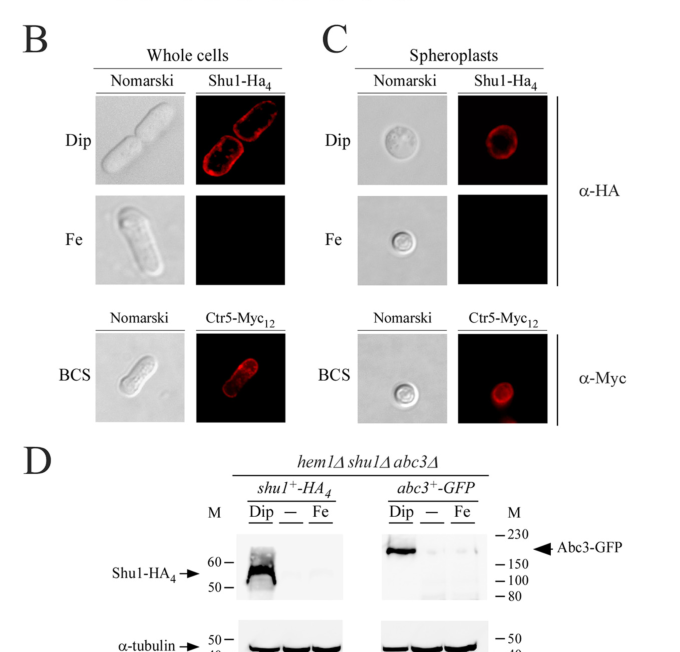

Shu1 is a GPI-anchored cell surface heme receptor that enables high-affinity heme acquisition as an iron source during iron starvation in S. pombe. It binds hemin with micromolar affinity (KD ~2.2 μM) through a cysteine-rich region containing a partial CFEM-like motif (Cys72-Cys101). Under iron-limited conditions, Shu1 localizes to the plasma membrane where it captures extracellular heme, then undergoes ligand-induced endocytosis to deliver heme to the vacuole. This heme import pathway works in concert with the vacuolar ABC transporter Abc3, which exports heme or iron from the vacuole to the cytosol, completing the two-step heme assimilation process. Shu1 expression is tightly regulated by iron availability through the Fep1 repressor, ensuring it is produced only when cells need to scavenge iron from heme sources.
| GO Term | Evidence | Action | Reason |
|---|---|---|---|
|
GO:0016192
vesicle-mediated transport
|
IEA
GO_REF:0000108 |
KEEP AS NON CORE |
Summary: This IEA annotation appears to be based on inference from GO:0140488 (heme receptor activity). While Shu1 does undergo heme-induced internalization from plasma membrane to vacuole, this is more accurately described as receptor-mediated endocytosis rather than general vesicle-mediated transport. The annotation captures a real aspect of Shu1 function but is somewhat generic.
|
|
GO:0005773
vacuole
|
IEA
GO_REF:0000043 |
KEEP AS NON CORE |
Summary: This generic IEA annotation is superseded by the more specific GO:0000324 (fungal-type vacuole) IDA annotation (PMID:28193844), which is ACCEPT'd in this review. Shu1 relocates to the vacuolar membrane upon heme binding, but the fungal-type vacuole term with experimental evidence better captures this localization. Keeping the generic vacuole term as non-core.
Supporting Evidence:
file:SCHPO/Shu1/Shu1-deep-research-falcon.md
rapidly internalized to the vacuolar membrane** after binding hemin/ZnMP
|
|
GO:0005774
vacuolar membrane
|
IEA
GO_REF:0000044 |
ACCEPT |
Summary: This IEA annotation is well-supported by experimental evidence. PMID:28193844 demonstrates that Shu1-HA4 relocates to the vacuolar membrane under high hemin concentrations, representing the internalized form of the protein after heme binding.
|
|
GO:0005886
plasma membrane
|
IEA
GO_REF:0000120 |
ACCEPT |
Summary: This IEA annotation is strongly supported by experimental evidence. Multiple studies (PMID:25733668, PMID:28193844) demonstrate Shu1 localizes to the plasma membrane, particularly under low hemin concentrations. This represents the primary functional location for heme reception.
|
|
GO:0016020
membrane
|
IEA
GO_REF:0000043 |
KEEP AS NON CORE |
Summary: This IEA annotation is correct but overly general. Shu1 is indeed a membrane protein (both plasma membrane and vacuolar membrane), but the more specific localization terms provide better functional information.
|
|
GO:0098552
side of membrane
|
IEA
GO_REF:0000043 |
KEEP AS NON CORE |
Summary: This IEA annotation is too generic and not particularly informative. While Shu1 is GPI-anchored to the external side of the plasma membrane, the more specific GO:0009897 (external side of plasma membrane) term with experimental support provides better functional information.
|
|
GO:0140488
heme receptor activity
|
EXP
PMID:25733668 Shu1 is a cell-surface protein involved in iron acquisition ... |
ACCEPT |
Summary: This experimental annotation perfectly captures Shu1 core molecular function. PMID:25733668 demonstrates Shu1 functions as a heme receptor with direct binding activity (KD ~2.2 μM) and is required for heme uptake. This is the primary molecular function of Shu1.
Supporting Evidence:
PMID:25733668
When a hem1 Δ shu1 Δ mutant strain was incubated in the absence of ALA and in the presence of hemin, cells were unable to grow unless an untagged shu1 + or HA 4 -tagged shu1 + allele was re-integrated and expressed in this mutant strain
file:SCHPO/Shu1/Shu1-deep-research-falcon.md
Direct biochemical evidence shows Shu1 binds hemin with **micromolar affinity (~2.2 µM)**
|
|
GO:0140488
heme receptor activity
|
IDA
PMID:28193844 Heme Assimilation in Schizosaccharomyces pombe Requires Cell... |
ACCEPT |
Summary: This IDA annotation provides additional experimental support for Shu1 heme receptor activity. PMID:28193844 demonstrates heme binding and receptor function through direct biochemical assays, complementing the evidence from PMID:25733668.
Supporting Evidence:
PMID:28193844
the heme analog zinc mesoporphyrin IX (ZnMP) first accumulates into vacuoles and then subsequently, within the cytoplasm in a rapid and Shu1-dependent manner
file:SCHPO/Shu1/Shu1-deep-research-falcon.md
a **cell-surface GPI-anchored heme receptor** that binds hemin or ZnMP
|
|
GO:0000324
fungal-type vacuole
|
IDA
PMID:28193844 Heme Assimilation in Schizosaccharomyces pombe Requires Cell... |
ACCEPT |
Summary: This IDA annotation is well-supported and more specific than the generic vacuole term. PMID:28193844 shows Shu1 activity in fungal-type vacuoles after heme-induced internalization. This represents the secondary localization of Shu1 during the heme transport process.
Supporting Evidence:
PMID:28193844
When cells were treated with low concentrations of hemin, Shu1 localized at the cell surface, whereas under conditions of high concentrations of hemin, Shu1 was detected on vacuolar membrane
file:SCHPO/Shu1/Shu1-deep-research-falcon.md
rapidly internalized to the vacuolar membrane** after binding hemin/ZnMP
|
|
GO:0005886
plasma membrane
|
IDA
PMID:28193844 Heme Assimilation in Schizosaccharomyces pombe Requires Cell... |
ACCEPT |
Summary: This IDA annotation provides strong experimental support for plasma membrane localization. PMID:28193844 shows Shu1-HA4 localizes to the cell surface (plasma membrane) under low hemin concentrations, which is the primary functional location for heme reception.
Supporting Evidence:
PMID:28193844
When cells were treated with low concentrations of hemin, Shu1 localized at the cell surface
|
|
GO:0015886
heme transport
|
IMP
PMID:28193844 Heme Assimilation in Schizosaccharomyces pombe Requires Cell... |
ACCEPT |
Summary: This IMP annotation accurately captures Shu1 core biological process function. PMID:28193844 demonstrates through mutant phenotype analysis that Shu1 is required for heme transport, showing cells lacking Shu1 cannot efficiently transport heme. This is a core function.
Supporting Evidence:
PMID:28193844
the heme analog zinc mesoporphyrin IX (ZnMP) first accumulates into vacuoles and then subsequently, within the cytoplasm in a rapid and Shu1-dependent manner
file:SCHPO/Shu1/Shu1-deep-research-falcon.md
two distinct exogenous heme uptake pathways
|
|
GO:0020037
heme binding
|
IDA
PMID:28193844 Heme Assimilation in Schizosaccharomyces pombe Requires Cell... |
ACCEPT |
Summary: This IDA annotation is supported by reference to previous work. PMID:28193844 cites PMID:25733668 which showed Shu1 binds hemin through hemin-agarose pulldown assays. This represents the fundamental molecular interaction.
Supporting Evidence:
PMID:28193844
Absorbance spectroscopy and hemin-agarose pulldown experiments have demonstrated that Shu1 binds to hemin
file:SCHPO/Shu1/Shu1-deep-research-falcon.md
Mutation of **C72/C87/C92/C101 → Ala** strongly reduces hemin-agarose retention and eliminates high-affinity binding behavior, indicating these residues (or a subset) are crucial for heme coordination.
|
|
GO:0020037
heme binding
|
IDA
PMID:29549126 The major facilitator transporter Str3 is required for low-a... |
ACCEPT |
Summary: This IDA annotation provides additional experimental confirmation of heme binding activity. PMID:29549126 confirms Shu1 heme binding as part of studies comparing high-affinity (Shu1) vs low-affinity (Str3) heme transport systems.
Supporting Evidence:
PMID:29549126
In the fission yeast Schizosaccharomyces pombe, acquisition of exogenous heme is largely mediated by the cell membrane–associated Shu1
|
|
GO:0140420
heme import into cell
|
IMP
PMID:29549126 The major facilitator transporter Str3 is required for low-a... |
ACCEPT |
Summary: This IMP annotation accurately describes Shu1 core biological process. PMID:29549126 demonstrates through mutant phenotype analysis that Shu1 is essential for cellular heme import, working as a high-affinity system. This precisely captures the physiological function.
Supporting Evidence:
PMID:29549126
Using a strain that cannot synthesize heme de novo ( hem1 Δ) and lacks Shu1, we found that the heme-dependent growth deficit of this strain is rescued by hemin supplementation in the presence of Str3
file:SCHPO/Shu1/Shu1-deep-research-falcon.md
cargo is delivered to the **vacuole**, followed by redistribution to the cytoplasm via the vacuolar **ABC transporter Abc3**
|
|
GO:0010106
cellular response to iron ion starvation
|
IMP
PMID:25733668 Shu1 is a cell-surface protein involved in iron acquisition ... |
KEEP AS NON CORE |
Summary: This IMP annotation is well-supported by experimental evidence. PMID:25733668 shows Shu1 expression is induced under iron starvation conditions and repressed by iron repletion via Fep1. However, this represents the regulatory context rather than core function - Shu1 responds to iron starvation by enabling heme acquisition.
Supporting Evidence:
PMID:25733668
When iron levels are low, the transcription of shu1(+) is induced, although its expression is repressed when iron levels rise. The iron-dependent down-regulation of shu1(+) requires the GATA-type transcriptional repressor Fep1
file:SCHPO/Shu1/Shu1-deep-research-falcon.md
shu1+ transcription is induced by low iron and repressed by iron repletion in a mechanism involving the GATA-type repressor **Fep1**
|
|
GO:0005886
plasma membrane
|
IDA
PMID:25733668 Shu1 is a cell-surface protein involved in iron acquisition ... |
ACCEPT |
Summary: This IDA annotation is strongly supported by the original experimental evidence. PMID:25733668 shows HA4-tagged Shu1 localizes to the plasma membrane in functional shu1+-HA4 alleles, establishing the primary cellular location for heme receptor activity.
Supporting Evidence:
PMID:25733668
HA 4 -tagged Shu1 is localized at the plasma membrane when iron levels are low
|
|
GO:0098711
iron ion import across plasma membrane
|
IMP
NOT
PMID:25733668 Shu1 is a cell-surface protein involved in iron acquisition ... |
ACCEPT |
Summary: This annotation has a NOT qualifier in the original GOA data, indicating Shu1 is NOT involved in direct iron ion import. This is correct - Shu1 imports heme (which contains iron) rather than free iron ions. The NOT annotation properly distinguishes heme transport from direct iron transport.
Supporting Evidence:
PMID:25733668
their ability to acquire exogenous hemin or the fluorescent heme analog zinc mesoporphyrin IX is dependent on the expression of Shu1
file:SCHPO/Shu1/Shu1-deep-research-falcon.md
Shu1-mediated heme use is **independent of Fio1/Fip1** oxidase-permease-mediated elemental iron uptake
|
|
GO:0140420
heme import into cell
|
IMP
PMID:25733668 Shu1 is a cell-surface protein involved in iron acquisition ... |
ACCEPT |
Summary: This IMP annotation captures Shu1 core biological function perfectly. PMID:25733668 demonstrates through mutant analysis that Shu1 is required for acquisition of exogenous hemin and enables S. pombe to take up extracellular heme for cell growth. This is the primary physiological role.
Supporting Evidence:
PMID:25733668
that encodes a protein that enables S. pombe to take up extracellular heme for cell growth ... their ability to acquire exogenous hemin or the fluorescent heme analog zinc mesoporphyrin IX is dependent on the expression of Shu1
file:SCHPO/Shu1/Shu1-deep-research-falcon.md
an **iron-regulated, cell-surface heme-binding protein** required for **assimilation of exogenous hemin/heme and heme analogs**
|
|
GO:0009897
external side of plasma membrane
|
TAS
PMID:12845604 Genome-wide identification of fungal GPI proteins. |
ACCEPT |
Summary: This TAS annotation is based on computational prediction of GPI-anchoring from PMID:12845604 genome-wide analysis. This is well-supported by subsequent experimental evidence (PMID:28193844) showing PI-PLC cleavability confirming GPI-anchoring. The external side localization is functionally important for heme reception.
Supporting Evidence:
PMID:12845604
Glycosylphosphatidylinositol-modified (GPI) proteins
PMID:28193844
Shaving experiments showed that Shu1 is released from membrane preparations when spheroplast lysates are incubated with phosphoinositide-specific phospholipase C (PI-PLC)
|
|
GO:0006879
intracellular iron ion homeostasis
|
IEA | NEW |
Summary: intracellular iron ion homeostasis identified from core_functions analysis
Reason: This biological process term captures Shu1's role in maintaining iron homeostasis by functioning as a high-affinity heme receptor for iron acquisition.
Supporting Evidence:
file:SCHPO/Shu1/Shu1-deep-research-falcon.md
an **iron-regulated, cell-surface heme-binding protein** required for **assimilation of exogenous hemin/heme and heme analogs**
|
|
GO:0006898
receptor-mediated endocytosis
|
IEA | NEW |
Summary: receptor-mediated endocytosis identified from core_functions analysis
Reason: This biological process term reflects Shu1's mechanism of heme uptake through ligand-induced endocytic trafficking to deliver iron to intracellular compartments.
Supporting Evidence:
file:SCHPO/Shu1/Shu1-deep-research-falcon.md
rapidly internalized to the vacuolar membrane** after binding hemin/ZnMP
|
Q: What is the molecular machinery driving heme-induced endocytic internalization of Shu1 from the plasma membrane to the vacuole, and how is this triggered by hemin binding (e.g. the proposed roles for ubiquitination, ESCRT factors)?
Q: How is heme handed off from vacuolar Shu1 to the vacuolar ABC transporter Abc3 for export to the cytosol, and are these factors part of a physical complex?
Q: How do the high-affinity (Shu1) and low-affinity (Str3) heme uptake routes functionally partition across different extracellular hemin concentrations and physiological conditions?
Q: Does the partial CFEM-like cysteine arrangement (C72/C87/C92/C101) coordinate the heme iron directly, and what is the structural basis of hemin recognition?
Experiment: Live-cell imaging of fluorescently tagged Shu1 combined with ZnMP uptake assays to track plasma-membrane-to-vacuole trafficking kinetics as a function of extracellular hemin concentration
Experiment: Structure determination (e.g. AlphaFold-guided mutagenesis or crystallography) of the cysteine-rich heme-binding region to define how the C72/C87/C92/C101 quartet coordinates hemin
Experiment: Genetic epistasis and co-fractionation experiments between Shu1, Abc3, and endocytic/ESCRT machinery to map the heme delivery pathway from cell surface to cytosol
Experiment: Comparative uptake assays in shu1Delta, str3Delta, and double mutants across a range of hemin concentrations to quantify the relative contributions of the high-affinity and low-affinity heme acquisition routes
Exported on March 22, 2026 at 12:24 AM
Organism: Schizosaccharomyces pombe
Sequence:
MISLKIYFVLIFLFLKGINSAYVSNEEGETVDFTFSGFYANLTYPNEISELNYVEGNYLSTRIVRFNGSFYCDTTILSETNNVTGSCYVANCANDTVLEICDSGKEVHFTDMSGTTWSADTFTENLYWFCGGDGNKPNMTTAAAMNSDIDSYYVYGNWTIDTADSTVADYTCNYTHFQEAGDIEKGDVYTASADSSDSSSASSTIFKPSYFISCLLSVGLYLVLNF
I begin with the InterPro architecture. The sequence carries a single annotated module: InterPro_2001048 (HECT-type zinc finger, EC 2.3.2.25), a cysteine/histidine-coordinated zinc-binding fold that forms the catalytic core of HECT E3 ubiquitin ligases. This architecture creates an active-site thioester intermediate that transfers ubiquitin from E2 conjugating enzymes to lysine residues on substrates. The presence and dominance of this HECT catalytic module causally define a ligase that covalently modifies target proteins by ubiquitin attachment, establishing the molecular function as ubiquitin-protein transferase activity.
From this catalytic identity, the biological role follows. HECT ligases determine substrate fate by assembling mono- or polyubiquitin chains, thereby routing proteins toward degradation, endocytosis, or signaling. In fission yeast, such ubiquitin signaling is a central control point for proteostasis and pathway modulation. Thus, the ligase activity directly drives the broader process of protein ubiquitination, which in turn governs downstream fates and pathway flux.
Cellular localization is inferred from the soluble, non-membrane architecture of HECT domains and their typical operation on cytosolic and nucleocytoplasmic substrates. The absence of transmembrane segments or secretion signals, together with the need to access diverse cytosolic targets and assembly factors, supports a cytoplasmic residence. This aligns with a soluble cytoplasmic enzyme that transiently docks to substrates and adaptor complexes.
Mechanistically, the HECT core recruits an E2~ubiquitin conjugate, forms a catalytic thioester on the HECT active-site cysteine, and then transfers ubiquitin to substrate lysines, dictating chain topology through context-specific interactions. In fission yeast, this chemistry enables rapid remodeling of protein networks that control growth and stress responses. I therefore hypothesize that the ligase transiently associates with ubiquitin pathway components (E2 conjugating enzymes and deubiquitinases), cytoplasmic adaptor assemblies, and substrate cohorts involved in proteostasis and signaling. These interactions would position the enzyme at cytoplasmic hubs where substrate selection and ubiquitin-chain editing coordinate efficient protein turnover and pathway tuning.
A cytoplasmic ubiquitin ligase in fission yeast that uses a HECT catalytic core to form a transient thioester with ubiquitin and transfer it onto target proteins. By assembling mono- and polyubiquitin on substrates, it modulates proteostasis and signaling pathways that govern protein turnover and pathway routing. Its soluble architecture supports transient assembly with conjugating enzymes and adaptor complexes to fine-tune ubiquitin-dependent regulation in the cytoplasm.
Probable E3 ubiquitin-protein ligase which mediates ubiquitination of target proteins.
Molecular Function: molecular_function (GO:0003674), binding (GO:0005488), ubiquitin-protein transferase activity (GO:0005515)
Biological Process: biological_process (GO:0008150), cellular process (GO:0009987), cellular component organization or biogenesis (GO:0071840), cellular component organization (GO:0016043), membrane organization (GO:0061024), endomembrane system organization (GO:0010256), plasma membrane organization (GO:0007009)
Cellular Component: cellular_component (GO:0005575), cellular anatomical entity (GO:0110165), side of membrane (GO:0098552), cell surface (GO:0009986), cell periphery (GO:0071944), membrane (GO:0016020), external side of plasma membrane (GO:0009897), plasma membrane (GO:0005886)
Generated by BioReason
Exported on March 22, 2026 at 12:24 AM
Organism: Schizosaccharomyces pombe
Sequence:
MISLKIYFVLIFLFLKGINSAYVSNEEGETVDFTFSGFYANLTYPNEISELNYVEGNYLSTRIVRFNGSFYCDTTILSETNNVTGSCYVANCANDTVLEICDSGKEVHFTDMSGTTWSADTFTENLYWFCGGDGNKPNMTTAAAMNSDIDSYYVYGNWTIDTADSTVADYTCNYTHFQEAGDIEKGDVYTASADSSDSSSASSTIFKPSYFISCLLSVGLYLVLNF
I begin with the InterPro architecture. The sequence carries a single annotated module: InterPro_2001048 (HECT-type zinc finger, EC 2.3.2.25), a cysteine/histidine-coordinated zinc-binding fold that forms the catalytic core of HECT E3 ubiquitin ligases. This architecture creates an active-site thioester intermediate that transfers ubiquitin from E2 conjugating enzymes to lysine residues on substrates. The presence and dominance of this HECT catalytic module causally define a ligase that covalently modifies target proteins by ubiquitin attachment, establishing the molecular function as ubiquitin-protein transferase activity.
From this catalytic identity, the biological role follows. HECT ligases determine substrate fate by assembling mono- or polyubiquitin chains, thereby routing proteins toward degradation, endocytosis, or signaling. In fission yeast, such ubiquitin signaling is a central control point for proteostasis and pathway modulation. Thus, the ligase activity directly drives the broader process of protein ubiquitination, which in turn governs downstream fates and pathway flux.
Cellular localization is inferred from the soluble, non-membrane architecture of HECT domains and their typical operation on cytosolic and nucleocytoplasmic substrates. The absence of transmembrane segments or secretion signals, together with the need to access diverse cytosolic targets and assembly factors, supports a cytoplasmic residence. This aligns with a soluble cytoplasmic enzyme that transiently docks to substrates and adaptor complexes.
Mechanistically, the HECT core recruits an E2~ubiquitin conjugate, forms a catalytic thioester on the HECT active-site cysteine, and then transfers ubiquitin to substrate lysines, dictating chain topology through context-specific interactions. In fission yeast, this chemistry enables rapid remodeling of protein networks that control growth and stress responses. I therefore hypothesize that the ligase transiently associates with ubiquitin pathway components (E2 conjugating enzymes and deubiquitinases), cytoplasmic adaptor assemblies, and substrate cohorts involved in proteostasis and signaling. These interactions would position the enzyme at cytoplasmic hubs where substrate selection and ubiquitin-chain editing coordinate efficient protein turnover and pathway tuning.
A cytoplasmic ubiquitin ligase in fission yeast that uses a HECT catalytic core to form a transient thioester with ubiquitin and transfer it onto target proteins. By assembling mono- and polyubiquitin on substrates, it modulates proteostasis and signaling pathways that govern protein turnover and pathway routing. Its soluble architecture supports transient assembly with conjugating enzymes and adaptor complexes to fine-tune ubiquitin-dependent regulation in the cytoplasm.
Probable E3 ubiquitin-protein ligase which mediates ubiquitination of target proteins.
Molecular Function: molecular_function (GO:0003674), binding (GO:0005488), ubiquitin-protein transferase activity (GO:0005515)
Biological Process: biological_process (GO:0008150), cellular process (GO:0009987), cellular component organization or biogenesis (GO:0071840), cellular component organization (GO:0016043), membrane organization (GO:0061024), endomembrane system organization (GO:0010256), plasma membrane organization (GO:0007009)
Cellular Component: cellular_component (GO:0005575), cellular anatomical entity (GO:0110165), side of membrane (GO:0098552), cell surface (GO:0009986), cell periphery (GO:0071944), membrane (GO:0016020), external side of plasma membrane (GO:0009897), plasma membrane (GO:0005886)
Generated by BioReason
The research report should be a detailed narrative explaining the function, biological processes, and localization of the gene product. Citations should be given for all claims.
You should prioritize authoritative reviews and primary scientific literature when conducting research. You can supplement
this with annotations you find in gene/protein databases, but these can be outdated or inaccurate.
We are specifically interested in the primary function of the gene - for enzymes, what reaction is catalyzed, and what is the substrate specificity? For transporters, what is the substrate? For structural proteins or adapters, what is the broader structural role? For signaling molecules, what is the role in the pathway.
We are interested in where in or outside the cell the gene product carries out its function.
We are also interested in the signaling or biochemical pathways in which the gene functions. We are less interested in broad pleiotropic effects, except where these elucidate the precise role.
Include evidence where possible. We are interested in both experimental evidence as well as inference from structure, evolution, or bioinformatic analysis. Precise studies should be prioritized over high-throughput, where available.
Schizosaccharomyces pombe Shu1 (UniProt Q92340; gene shu1+; ORF SPAC1F8.02c) is an iron-regulated, cell-surface heme-binding protein required for assimilation of exogenous hemin/heme and heme analogs when endogenous heme biosynthesis is compromised. Direct biochemical evidence shows Shu1 binds hemin with micromolar affinity (~2.2 µM) and genetic evidence shows shu1 deletion prevents hemin-dependent growth in hem1Δ strains and dramatically reduces uptake of the fluorescent heme analog zinc mesoporphyrin (ZnMP). Shu1 localizes to the plasma membrane under iron starvation and is proposed (in later mechanistic synthesis) to traffic to the vacuole upon hemin exposure, consistent with an endocytic/vacuolar route for heme handling in fission yeast. (mourer2015shu1isa pages 1-2, mourer2015shu1isa pages 11-13, mourer2015shu1isa pages 2-3, ping2024theflavohemoglobinyhb1 pages 1-5)
Heme (iron–protoporphyrin IX) is abundant in animals and can serve as an iron reservoir for microbes, but it is hydrophobic and potentially toxic; therefore, microbes often use dedicated acquisition and trafficking systems. In fungi, heme acquisition is best characterized in pathogenic yeasts such as Candida albicans, which use specialized cell-surface receptors—often CFEM-domain proteins—to bind host heme/hemoglobin and promote internalization. (mourer2015shu1isa pages 11-13)
Based on experimental genetics, microscopy, and biochemistry, Shu1 is best defined as a cell-surface, high-affinity hemin/heme-binding factor enabling utilization of extracellular heme as an iron source in S. pombe. Mourer et al. explicitly describe Shu1 as a cell-surface protein involved in iron acquisition from heme, and demonstrate that Shu1 directly interacts with hemin. (mourer2015shu1isa pages 1-2, mourer2015shu1isa pages 11-13)
Shu1 shows sequence similarity to some Candida heme receptors (e.g., Rbt5/Pga7) and contains a cysteine-rich region important for hemin binding, but its cysteine arrangement is described as non-canonical/partial relative to typical CFEM motifs, suggesting Shu1 represents a divergent or distinct fungal heme-binding strategy compared with canonical CFEM relay systems. (mourer2015shu1isa pages 8-9, mourer2015shu1isa pages 11-13, mourer2019étudedumécanisme pages 93-96)
Primary function: facilitate assimilation of exogenous hemin/heme for iron acquisition.
Substrate evidence:
- hem1Δ strains (blocked in first step of heme biosynthesis) can be used to force dependence on exogenous hemin; under these conditions, growth on hemin and uptake of ZnMP depend on shu1+. (mourer2015shu1isa pages 1-2, mourer2015shu1isa pages 2-3)
- Shu1 does not simply substitute for elemental iron uptake; functional assays indicate specificity for heme/porphyrin assimilation rather than FeCl3 uptake alone. (mourer2019étudedumécanisme pages 84-89)
Purified Shu1(21–200) binds hemin directly:
- Spectral titration shows a Soret shift from ~388–391 nm (hemin alone) to ~407 nm upon Shu1 addition, supporting direct coordination/binding. (mourer2015shu1isa pages 11-13, mourer2019étudedumécanisme pages 89-93)
- Binding analysis yields K_D ≈ 2.2 × 10⁻⁶ M (≈2.2 µM). (mourer2015shu1isa pages 11-13, mourer2019étudedumécanisme pages 89-93)
- Hemin-agarose pulldown experiments show Shu1 is retained on hemin-agarose, supporting specific hemin interaction. (mourer2015shu1isa pages 11-13, mourer2019étudedumécanisme pages 89-93)
Cysteine-dependence:
- Mutation of C72/C87/C92/C101 → Ala strongly reduces hemin-agarose retention and eliminates high-affinity binding behavior, indicating these residues (or a subset) are crucial for heme coordination. (mourer2015shu1isa pages 11-13, mourer2019étudedumécanisme pages 89-93, mourer2019étudedumécanisme pages 93-96)
A key 2024 development is the explicit framing of two distinct exogenous heme uptake pathways in S. pombe: Shu1 (cell-surface/GPI-anchored route) and Str3 (a distinct MFS transporter route). (ping2024theflavohemoglobinyhb1 pages 13-17, ping2024theflavohemoglobinyhb1 pages 10-13)
In that 2024 synthesis, Shu1 is described as:
- a cell-surface GPI-anchored heme receptor that binds hemin or ZnMP, and
- a component of a pathway in which cargo is delivered to the vacuole, followed by redistribution to the cytoplasm via the vacuolar ABC transporter Abc3 (a model consistent with vacuolar involvement in heme/iron handling). (ping2024theflavohemoglobinyhb1 pages 1-5)
This places Shu1 in an iron-acquisition network alongside reductive iron assimilation and siderophore transport but functioning specifically for heme assimilation. (mourer2015shu1isa pages 13-14)
Mourer et al. used HA-tagged Shu1 and found peripheral staining consistent with cell-surface localization under iron starvation; spheroplast experiments support a plasma membrane location rather than exclusive cell wall retention. (mourer2015shu1isa pages 8-9)
The requested visual evidence is present in the 2015 paper figures (immunofluorescence and biochemical fractionation; hemin-binding assays; growth assays). (mourer2015shu1isa media ac014ef9)
A later mechanistic synthesis (2024 preprint) describes Shu1 as being rapidly internalized to the vacuolar membrane after binding hemin/ZnMP, consistent with an endocytic/vacuolar delivery route for porphyrin handling. (ping2024theflavohemoglobinyhb1 pages 1-5)
Shu1 is strongly iron-regulated:
- shu1+ transcription is induced by low iron and repressed by iron repletion in a mechanism involving the GATA-type repressor Fep1. (mourer2015shu1isa pages 1-2, mourer2015shu1isa pages 2-3)
- In 2015, shu1 induction under iron starvation is reported with delayed kinetics: detectable at ~90 min and maximal by ~4 h, slower than some other iron-uptake genes. (mourer2015shu1isa pages 13-14)
In Ping et al. (2024), the shu1+ promoter is used as a positive control for Fep1 ChIP and shows iron-dependent promoter occupancy: ~7.3-fold enrichment under iron-replete vs ~1.2-fold under low iron. (ping2024theflavohemoglobinyhb1 pages 10-13)
Using hem1Δ strains (blocked heme biosynthesis, requiring exogenous heme/ALA), deletion of shu1 compromises hemin utilization:
- A hem1Δ shu1Δ strain shows ~6–8-fold less growth after 68 h than shu1+ controls under hemin-supported conditions (hemin 0.075 µM). (mourer2019étudedumécanisme pages 84-89)
ZnMP uptake is Shu1-dependent:
- Typical assay conditions include iron manipulation by Dip 250 µM or FeCl3 100 µM for 3 h, followed by incubation with ZnMP 2 µM for 90 min; deletion of shu1 dramatically reduces cellular ZnMP signal. (mourer2015shu1isa pages 10-11, mourer2019étudedumécanisme pages 84-89)
Ping et al. (bioRxiv, 2024-03-03) integrates Shu1 into a broader physiological context in which exogenous heme uptake supports heme-dependent processes such as nitrosative stress defense (via Yhb1) when cells rely on external hemin. While their main focus is Str3–Yhb1 interaction, they explicitly treat Shu1 and Str3 as the two distinct heme uptake pathways in fission yeast and provide updated regulatory and trafficking context for Shu1. (ping2024theflavohemoglobinyhb1 pages 1-5, ping2024theflavohemoglobinyhb1 pages 10-13, ping2024theflavohemoglobinyhb1 pages 13-17)
A 2023 review on fungal siderophore metabolism emphasizes that high-affinity iron uptake in many fungi is dominated by reductive iron assimilation and siderophore systems, and notes that some fungi (e.g., Aspergillus fumigatus) appear to lack efficient use of heme as an iron source—highlighting lineage diversity and why a dedicated heme uptake factor like Shu1 may be more relevant in some fungi than others. This review does not discuss Shu1 or CFEM heme receptors directly, so its relevance is contextual rather than Shu1-specific. (happacher2023fungalsiderophoremetabolism pages 1-3)
Shu1 provides a tractable model for:
- Studying fungal heme uptake mechanisms in a genetically manipulable yeast, including cell-surface binding, endocytic routing, and vacuolar redistribution models. (mourer2015shu1isa pages 1-2, ping2024theflavohemoglobinyhb1 pages 1-5)
- Chemical biology/transport assays using fluorescent heme analogs (ZnMP) to quantify uptake dependence on surface factors and iron regulation. (mourer2015shu1isa pages 10-11)
While S. pombe is not a major pathogen, Shu1-like heme acquisition principles connect to heme uptake in pathogenic fungi where cell-surface heme receptors contribute to iron acquisition in host environments. The S. pombe Shu1 system broadens comparative understanding of fungal heme uptake beyond the well-studied Candida CFEM relay. (mourer2015shu1isa pages 11-13, mourer2015shu1isa pages 13-14)
| Category | Key findings | Evidence type | Primary source(s) with publication date and URL |
|---|---|---|---|
| identity/structure | shu1 = SPAC1F8.02c = UniProt Q92340 in Schizosaccharomyces pombe; encodes a 226 aa precursor/cell-surface heme-binding protein with N-terminal signal peptide, predicted GPI-anchor attachment near Ser199, short C-terminal hydrophobic segment/pro-peptide, and a partial CFEM-like cysteine-rich region including C72/C87/C92/C101 important for heme interaction (mourer2015shu1isa pages 1-2, mourer2019étudedumécanisme pages 61-65, mourer2015shu1isa pages 13-14) | Sequence analysis, genetics, biochemistry | Mourer T, Jacques J-F, Brault A, Bisaillon M, Labbé S. 2015-04. Shu1 Is a Cell-surface Protein Involved in Iron Acquisition from Heme in Schizosaccharomyces pombe. J Biol Chem. https://doi.org/10.1074/jbc.m115.642058 ; Mourer T. 2019. Étude du mécanisme d'acquisition de l'hème par le récepteur Shu1 chez Schizosaccharomyces pombe (thesis/monograph record) (mourer2015shu1isa pages 1-2, mourer2019étudedumécanisme pages 61-65, mourer2015shu1isa pages 13-14) |
| substrate specificity | Shu1 is required for utilization of exogenous hemin/heme and uptake of the fluorescent heme analog ZnMP when endogenous heme synthesis is blocked (hem1Δ background). Available evidence supports heme/porphyrin uptake specificity, not general ferric iron uptake; Shu1 does not substitute for the high-affinity elemental iron uptake system and cannot mediate growth on exogenous FeCl3 alone (mourer2019étudedumécanisme pages 84-89, mourer2015shu1isa pages 2-3, mourer2019étudedumécanisme pages 61-65) | Genetics, uptake assay | Mourer et al., 2015-04, https://doi.org/10.1074/jbc.m115.642058 ; Mourer, 2019 (mourer2019étudedumécanisme pages 84-89, mourer2015shu1isa pages 2-3, mourer2019étudedumécanisme pages 61-65) |
| binding affinity | Purified Shu1(21–200) binds hemin directly in vitro. Spectral titration of 10 µM hemin with 0–7 µM Shu1 shifted the Soret peak from ~388–391 nm to ~407 nm and gave an apparent K_D ≈ 2.2 × 10^-6 M (2.2 µM). The C72A/C87A/C92A/C101A mutant greatly reduced hemin-agarose retention and failed to yield a measurable high-affinity interaction (mourer2015shu1isa pages 1-2, mourer2019étudedumécanisme pages 89-93, mourer2015shu1isa pages 11-13) | Biochemistry | Mourer et al., 2015-04, https://doi.org/10.1074/jbc.m115.642058 ; Mourer, 2019 (mourer2015shu1isa pages 1-2, mourer2019étudedumécanisme pages 89-93, mourer2015shu1isa pages 11-13) |
| localization | HA-tagged Shu1 localizes to the cell periphery/plasma membrane under low-iron conditions; localization remains membrane-associated after cell wall digestion (spheroplasts), supporting plasma membrane rather than wall-only localization. Later work indicates Shu1 is hemin-responsive: at low hemin it is at the plasma membrane, while at higher extracellular hemin it is internalized to the vacuole/vacuolar membrane (mourer2015shu1isa pages 8-9, mourer2019étudedumécanisme pages 106-109, mourer2019étudedumécanisme pages 132-135, mourer2015shu1isa media ac014ef9) | Microscopy, membrane fractionation | Mourer et al., 2015-04, https://doi.org/10.1074/jbc.m115.642058 ; Mourer, 2019 (mourer2015shu1isa pages 8-9, mourer2019étudedumécanisme pages 106-109, mourer2019étudedumécanisme pages 132-135, mourer2015shu1isa media ac014ef9) |
| regulation | Iron starvation induces shu1+, whereas iron repletion represses it through the GATA-type repressor Fep1. In the 2015 study, induction was detectable after ~90 min of iron starvation and reached maximal levels by ~4 h. Typical assay conditions included Dip 250 µM or FeCl3 100 µM for 3 h. A 2024 study used the shu1+ promoter as a Fep1 ChIP positive control and reported ~7.3-fold Fep1 enrichment at the promoter under iron-replete conditions versus ~1.2-fold under low iron (mourer2015shu1isa pages 1-2, mourer2015shu1isa pages 13-14, mourer2019étudedumécanisme pages 84-89, mourer2019étudedumécanisme pages 80-84, ping2024theflavohemoglobinyhb1 pages 10-13) | Regulatory, ChIP, expression analysis | Mourer et al., 2015-04, https://doi.org/10.1074/jbc.m115.642058 ; Ping FLY et al. 2024-03. The flavohemoglobin Yhb1 is a new interacting partner of the heme transporter Str3 (preprint). https://doi.org/10.1101/2024.03.03.583214 (mourer2015shu1isa pages 1-2, mourer2015shu1isa pages 13-14, ping2024theflavohemoglobinyhb1 pages 10-13) |
| pathway/model | Best-supported model: Shu1 is a cell-surface GPI-anchored heme receptor/transporter that captures extracellular heme/ZnMP for iron acquisition. Shu1-mediated heme use is independent of Fio1/Fip1 oxidase-permease-mediated elemental iron uptake. Later mechanistic work proposes that Shu1-bound heme is trafficked via endocytosis to the vacuole, followed by export to the cytoplasm through the vacuolar ABC transporter Abc3; this is distinct from the parallel Str3 pathway (mourer2015shu1isa pages 13-14, mourer2019étudedumécanisme pages 106-109, ping2024theflavohemoglobinyhb1 pages 1-5) | Genetics, cell biology, pathway inference | Mourer et al., 2015-04, https://doi.org/10.1074/jbc.m115.642058 ; Ping et al., 2024-03, https://doi.org/10.1101/2024.03.03.583214 ; Mourer, 2019 (mourer2015shu1isa pages 13-14, mourer2019étudedumécanisme pages 106-109, ping2024theflavohemoglobinyhb1 pages 1-5) |
| key assays & phenotypes | In hem1Δ cells (heme biosynthesis blocked), exogenous ALA 200 µM rescues viability and enables heme-uptake assays. In hemin-supported growth conditions (hemin 0.075 µM), hem1Δ shu1Δ cells show severe growth defects; one study reports ~6–8-fold less growth after 68 h than shu1+ controls/complemented strains. ZnMP uptake assays used 2 µM ZnMP after 3 h iron manipulation and 90 min uptake; loss of shu1 dramatically lowered ZnMP fluorescence. Hemin-agarose pull-down and spectral titration support direct binding, while the cysteine-quartet mutant loses function without obvious mislocalization (mourer2019étudedumécanisme pages 84-89, mourer2015shu1isa pages 2-3, mourer2015shu1isa pages 10-11, mourer2015shu1isa media ac014ef9) | Genetics, fluorescence uptake assay, biochemistry, microscopy | Mourer et al., 2015-04, https://doi.org/10.1074/jbc.m115.642058 ; Mourer, 2019 (mourer2019étudedumécanisme pages 84-89, mourer2015shu1isa pages 2-3, mourer2015shu1isa pages 10-11, mourer2015shu1isa media ac014ef9) |
| recent updates 2024 | A 2024 S. pombe preprint places Shu1 in a broader dual heme-uptake network with Str3. It describes Shu1 as the high-affinity/cell-surface GPI-anchored route for hemin/ZnMP uptake and notes mechanistic requirements for Shu1 trafficking/internalization involving Ubi4-dependent ubiquitination, Ubc13, Nbr1, and ESCRT factors (Hse1, Sst6), whereas Str3 is a separate 12-TM transporter route that remains at the plasma membrane and requires higher hemin concentrations than Shu1. This refines pathway context but does not overturn the core 2015 annotation (ping2024theflavohemoglobinyhb1 pages 1-5, ping2024theflavohemoglobinyhb1 pages 10-13, ping2024theflavohemoglobinyhb1 pages 13-17) | Recent mechanistic synthesis, genetics, trafficking model | Ping FLY et al. 2024-03. The flavohemoglobin Yhb1 is a new interacting partner of the heme transporter Str3 (preprint). https://doi.org/10.1101/2024.03.03.583214 (ping2024theflavohemoglobinyhb1 pages 1-5, ping2024theflavohemoglobinyhb1 pages 10-13, ping2024theflavohemoglobinyhb1 pages 13-17) |
Table: This table summarizes experimentally supported functional annotation for fission yeast Shu1/Q92340, including structure, substrate, affinity, localization, regulation, and pathway context. It is designed as a compact evidence map linking each claim to primary sources and available quantitative data.
The 2015 JBC paper includes figures showing: (i) Shu1 plasma membrane localization by immunofluorescence; (ii) hemin-dependent growth assays demonstrating Shu1 requirement; and (iii) hemin-agarose pulldown and spectral titration defining hemin binding (including the KD). (mourer2015shu1isa media ac014ef9)
References
(mourer2015shu1isa pages 1-2): Thierry Mourer, Jean-François Jacques, Ariane Brault, Martin Bisaillon, and Simon Labbé. Shu1 is a cell-surface protein involved in iron acquisition from heme in schizosaccharomyces pombe. Journal of Biological Chemistry, 290:10176-10190, Apr 2015. URL: https://doi.org/10.1074/jbc.m115.642058, doi:10.1074/jbc.m115.642058. This article has 49 citations and is from a domain leading peer-reviewed journal.
(mourer2015shu1isa pages 11-13): Thierry Mourer, Jean-François Jacques, Ariane Brault, Martin Bisaillon, and Simon Labbé. Shu1 is a cell-surface protein involved in iron acquisition from heme in schizosaccharomyces pombe. Journal of Biological Chemistry, 290:10176-10190, Apr 2015. URL: https://doi.org/10.1074/jbc.m115.642058, doi:10.1074/jbc.m115.642058. This article has 49 citations and is from a domain leading peer-reviewed journal.
(mourer2015shu1isa pages 2-3): Thierry Mourer, Jean-François Jacques, Ariane Brault, Martin Bisaillon, and Simon Labbé. Shu1 is a cell-surface protein involved in iron acquisition from heme in schizosaccharomyces pombe. Journal of Biological Chemistry, 290:10176-10190, Apr 2015. URL: https://doi.org/10.1074/jbc.m115.642058, doi:10.1074/jbc.m115.642058. This article has 49 citations and is from a domain leading peer-reviewed journal.
(ping2024theflavohemoglobinyhb1 pages 1-5): Florie Lo Ying Ping, Tobias Vahsen, Ariane Brault, Raphaël Néré, and Simon Labbé. The flavohemoglobin yhb1 is a new interacting partner of the heme transporter str3. BioRxiv, Mar 2024. URL: https://doi.org/10.1101/2024.03.03.583214, doi:10.1101/2024.03.03.583214. This article has 0 citations.
(mourer2015shu1isa pages 8-9): Thierry Mourer, Jean-François Jacques, Ariane Brault, Martin Bisaillon, and Simon Labbé. Shu1 is a cell-surface protein involved in iron acquisition from heme in schizosaccharomyces pombe. Journal of Biological Chemistry, 290:10176-10190, Apr 2015. URL: https://doi.org/10.1074/jbc.m115.642058, doi:10.1074/jbc.m115.642058. This article has 49 citations and is from a domain leading peer-reviewed journal.
(mourer2019étudedumécanisme pages 93-96): T Mourer. Étude du mécanisme d'acquisition de l'hème par le récepteur shu1 chez schizosaccharomyces pombe. Unknown journal, 2019.
(mourer2019étudedumécanisme pages 84-89): T Mourer. Étude du mécanisme d'acquisition de l'hème par le récepteur shu1 chez schizosaccharomyces pombe. Unknown journal, 2019.
(mourer2019étudedumécanisme pages 89-93): T Mourer. Étude du mécanisme d'acquisition de l'hème par le récepteur shu1 chez schizosaccharomyces pombe. Unknown journal, 2019.
(ping2024theflavohemoglobinyhb1 pages 13-17): Florie Lo Ying Ping, Tobias Vahsen, Ariane Brault, Raphaël Néré, and Simon Labbé. The flavohemoglobin yhb1 is a new interacting partner of the heme transporter str3. BioRxiv, Mar 2024. URL: https://doi.org/10.1101/2024.03.03.583214, doi:10.1101/2024.03.03.583214. This article has 0 citations.
(ping2024theflavohemoglobinyhb1 pages 10-13): Florie Lo Ying Ping, Tobias Vahsen, Ariane Brault, Raphaël Néré, and Simon Labbé. The flavohemoglobin yhb1 is a new interacting partner of the heme transporter str3. BioRxiv, Mar 2024. URL: https://doi.org/10.1101/2024.03.03.583214, doi:10.1101/2024.03.03.583214. This article has 0 citations.
(mourer2015shu1isa pages 13-14): Thierry Mourer, Jean-François Jacques, Ariane Brault, Martin Bisaillon, and Simon Labbé. Shu1 is a cell-surface protein involved in iron acquisition from heme in schizosaccharomyces pombe. Journal of Biological Chemistry, 290:10176-10190, Apr 2015. URL: https://doi.org/10.1074/jbc.m115.642058, doi:10.1074/jbc.m115.642058. This article has 49 citations and is from a domain leading peer-reviewed journal.
(mourer2015shu1isa media ac014ef9): Thierry Mourer, Jean-François Jacques, Ariane Brault, Martin Bisaillon, and Simon Labbé. Shu1 is a cell-surface protein involved in iron acquisition from heme in schizosaccharomyces pombe. Journal of Biological Chemistry, 290:10176-10190, Apr 2015. URL: https://doi.org/10.1074/jbc.m115.642058, doi:10.1074/jbc.m115.642058. This article has 49 citations and is from a domain leading peer-reviewed journal.
(mourer2015shu1isa pages 10-11): Thierry Mourer, Jean-François Jacques, Ariane Brault, Martin Bisaillon, and Simon Labbé. Shu1 is a cell-surface protein involved in iron acquisition from heme in schizosaccharomyces pombe. Journal of Biological Chemistry, 290:10176-10190, Apr 2015. URL: https://doi.org/10.1074/jbc.m115.642058, doi:10.1074/jbc.m115.642058. This article has 49 citations and is from a domain leading peer-reviewed journal.
(happacher2023fungalsiderophoremetabolism pages 1-3): Isidor Happacher, Mario Aguiar, Annie Yap, Clemens Decristoforo, and Hubertus Haas. Fungal siderophore metabolism with a focus on aspergillus fumigatus: impact on biotic interactions and potential translational applications. Essays in Biochemistry, 67:829-842, Sep 2023. URL: https://doi.org/10.1042/ebc20220252, doi:10.1042/ebc20220252. This article has 35 citations and is from a peer-reviewed journal.
(mourer2019étudedumécanisme pages 61-65): T Mourer. Étude du mécanisme d'acquisition de l'hème par le récepteur shu1 chez schizosaccharomyces pombe. Unknown journal, 2019.
(mourer2019étudedumécanisme pages 106-109): T Mourer. Étude du mécanisme d'acquisition de l'hème par le récepteur shu1 chez schizosaccharomyces pombe. Unknown journal, 2019.
(mourer2019étudedumécanisme pages 132-135): T Mourer. Étude du mécanisme d'acquisition de l'hème par le récepteur shu1 chez schizosaccharomyces pombe. Unknown journal, 2019.
(mourer2019étudedumécanisme pages 80-84): T Mourer. Étude du mécanisme d'acquisition de l'hème par le récepteur shu1 chez schizosaccharomyces pombe. Unknown journal, 2019.

Generated using OpenAI Deep Research API
Shu1 is a cell-surface heme-binding protein in fission yeast that enables the uptake of extracellular heme as an iron source (pmc.ncbi.nlm.nih.gov) (pmc.ncbi.nlm.nih.gov). Under iron-limited conditions, S. pombe can utilize heme from the environment, and Shu1 is essential for assimilating heme-bound iron (pmc.ncbi.nlm.nih.gov) (pmc.ncbi.nlm.nih.gov). Shu1 binds hemin (iron-containing porphyrin) with micromolar affinity (K_D ≈ 2.2 μM) (pmc.ncbi.nlm.nih.gov). Mechanistically, Shu1 acts as a heme receptor: it captures exogenous heme at the cell surface and facilitates its internalization. In Shu1-deficient yeast (shu1∆), cells cannot grow when heme is the sole iron source (e.g. in a heme-deficient hem1Δ background), confirming Shu1’s essential role in heme uptake for iron acquisition (pmc.ncbi.nlm.nih.gov). Once Shu1 binds heme, the Shu1–heme complex is rapidly endocytosed. Studies show that heme binding triggers Shu1 internalization from the plasma membrane to the vacuole, where the heme is transferred to intracellular pathways (pmc.ncbi.nlm.nih.gov) (pmc.ncbi.nlm.nih.gov). An ABC-family transporter, Abc3, located on the vacuolar membrane, then exports heme (or iron derived from it) into the cytosol (pmc.ncbi.nlm.nih.gov) (pmc.ncbi.nlm.nih.gov). In abc3∆ mutants, heme analogs accumulate in vacuoles and cannot reach the cytoplasm, phenocopying Shu1 loss (pmc.ncbi.nlm.nih.gov) (pmc.ncbi.nlm.nih.gov). Together, Shu1 and Abc3 define a two-step pathway: Shu1 mediates heme import into the cell (via endocytosis into vacuoles), and Abc3 releases heme or iron from the vacuole, thereby contributing to cellular iron homeostasis (pmc.ncbi.nlm.nih.gov). Notably, S. pombe was previously known to acquire iron only through reductive uptake and siderophores; Shu1’s discovery reveals a novel heme-iron acquisition mechanism in this yeast (pmc.ncbi.nlm.nih.gov) (pmc.ncbi.nlm.nih.gov). Shu1’s function is considered noncanonical because S. cerevisiae (budding yeast) lacks high-affinity heme importers and cannot effectively take up exogenous heme (pmc.ncbi.nlm.nih.gov). Thus, Shu1 provides S. pombe a unique strategy to scavenge iron by importing heme, highlighting a specialized molecular mechanism for iron uptake under iron-starvation conditions.
Shu1 localizes to the cell surface, anchored in the plasma membrane. A functional Shu1 tagged with HA epitopes was observed at the plasma membrane by fluorescence microscopy (pmc.ncbi.nlm.nih.gov). Even after enzymatic cell wall digestion, Shu1 remains membrane-associated, indicating it is not merely cell-wall bound but attached to the plasma membrane proper (pmc.ncbi.nlm.nih.gov). Shu1 is anchored via a glycosylphosphatidylinositol (GPI) anchor, as evidenced by its sensitivity to phosphatidylinositol-specific phospholipase C (PI-PLC) cleavage (pmc.ncbi.nlm.nih.gov) (pmc.ncbi.nlm.nih.gov). PI-PLC “shaving” experiments released Shu1 from membranes, confirming that Shu1 is a GPI-anchored membrane protein (pmc.ncbi.nlm.nih.gov) (pmc.ncbi.nlm.nih.gov). Sequence analysis identified a predicted GPI attachment site at Serine 199 of Shu1, with the adjacent residues (Ser200, Ala201) fitting the ω-site motif that favors GPI addition (pmc.ncbi.nlm.nih.gov) (pmc.ncbi.nlm.nih.gov). A hydrophobic C-terminal tail (∼12 residues after the ω-site) and a short spacer region are present, consistent with GPI-anchored protein architecture (pmc.ncbi.nlm.nih.gov). Thus, Shu1 is an extrinsic component of the plasma membrane (external side), tethered by a GPI lipid moiety. Under low heme (iron-starved) conditions, Shu1 resides predominantly at the cell surface (plasma membrane) to capture heme (pmc.ncbi.nlm.nih.gov). However, upon binding heme or when external heme is abundant, Shu1 undergoes ligand-induced internalization. It relocalizes from the plasma membrane to internal compartments, specifically the vacuolar membrane, at high heme concentrations (pmc.ncbi.nlm.nih.gov) (pmc.ncbi.nlm.nih.gov). This relocalization likely occurs via endocytic uptake of the Shu1–heme complex. The dynamic trafficking – cell surface in low heme vs. vacuole upon heme exposure – suggests a regulated process to avoid excess heme and to route bound heme to the vacuole for processing. In summary, Shu1 is a plasma membrane, GPI-anchored glycoprotein that cycles between the cell surface and vacuole, functioning at the interface of the cell and its environment to mediate heme import.
Shu1 is chiefly involved in iron ion homeostasis and heme transport processes. Its activity allows S. pombe to utilize extracellular hemin (heme chloride) or heme-containing compounds as iron sources when free iron is scarce (pmc.ncbi.nlm.nih.gov) (pmc.ncbi.nlm.nih.gov). Key biological processes associated with Shu1 include:
Heme import and transport: Shu1 contributes to the directed movement of heme into the cell. It can be annotated to heme transport and specifically heme import across the plasma membrane, as it mediates uptake of heme from the extracellular space (pmc.ncbi.nlm.nih.gov) (pmc.ncbi.nlm.nih.gov). This process supplements the organism’s iron acquisition strategies beyond traditional siderophore uptake and reductive iron uptake. Shu1-dependent heme assimilation ultimately feeds into cellular iron utilization, since internalized heme can be degraded (e.g., by heme oxygenases in other species or possibly by vacuolar enzymes) to release iron for metabolic needs (pmc.ncbi.nlm.nih.gov) (pmc.ncbi.nlm.nih.gov). In S. pombe (which notably lacks a canonical heme oxygenase enzyme (pmc.ncbi.nlm.nih.gov)), the imported heme likely stores in vacuoles and then iron is released, making Shu1’s role critical for iron acquisition under heme-rich, iron-poor conditions. GO terms capturing these roles include iron ion transport and iron assimilation from heme (a subset of iron homeostasis).
Response to iron starvation: Shu1 is part of the cellular response to low iron availability. Its expression is strongly induced under iron-starved conditions, making it a component of the iron starvation response regulon (pmc.ncbi.nlm.nih.gov) (pmc.ncbi.nlm.nih.gov). This ties Shu1 to the biological process cellular response to iron ion starvation. By being upregulated when iron is limited, Shu1 helps the cell scavenge alternative iron sources (heme) to survive iron deprivation. Conversely, when iron is plentiful, Shu1 is repressed to avoid unnecessary or harmful uptake of heme-bound iron (pmc.ncbi.nlm.nih.gov) (pmc.ncbi.nlm.nih.gov).
Endocytosis and vacuolar transport: Functionally, Shu1’s activity implicates endocytic trafficking (internalizing the heme–Shu1 complex) and vacuolar transport processes. Heme uptake via Shu1 likely proceeds through receptor-mediated endocytosis to deliver heme to vacuoles (pmc.ncbi.nlm.nih.gov) (pmc.ncbi.nlm.nih.gov). This is analogous to pathways in pathogenic fungi where cell-surface heme receptors facilitate endocytosis of heme for vacuolar sequestration (pmc.ncbi.nlm.nih.gov) (pmc.ncbi.nlm.nih.gov). In S. pombe, Shu1 and the vacuolar exporter Abc3 together define a pathway of heme assimilation: Shu1 enables endocytic uptake into vacuoles, and Abc3 handles export from vacuoles to cytosol (pmc.ncbi.nlm.nih.gov) (pmc.ncbi.nlm.nih.gov). These steps align with GO processes like endocytosis, vacuolar transport, and intracellular heme distribution.
Through these processes, Shu1 plays a pivotal role in maintaining iron homeostasis. It essentially widens the organism’s capability to gather iron by adding heme uptake to its repertoire. This is especially important in environments where iron is predominantly found in heme (for example, during growth on heme or hemoglobin as an iron source). Additionally, by localizing initially to the plasma membrane and later to vacuoles, Shu1 integrates into the processes of membrane trafficking and vacuolar iron storage. In summary, Shu1 is involved in heme uptake (GO:0015886), iron ion homeostasis (GO:0055072), and the broader cellular adaptation to iron scarcity, ensuring the cell can capture and mobilize iron from heme when needed.
Phenotypic effects of Shu1 perturbation: In laboratory conditions, deletion of shu1+ (shu1∆) causes a specific growth defect when exogenous heme is the only iron source available. Wild-type S. pombe can grow if supplied with hemin to meet its iron needs (especially when heme biosynthesis is genetically blocked), but shu1∆ mutants fail to thrive in such conditions (pmc.ncbi.nlm.nih.gov). This phenotype demonstrates Shu1’s essential role in heme-iron utilization: without Shu1, cells cannot assimilate heme, leading to iron starvation and growth arrest on heme-based media (pmc.ncbi.nlm.nih.gov). In contrast, under iron-replete conditions or standard media (with ample free iron), shu1∆ mutants do not show pronounced growth defects, because the cells can rely on other iron uptake pathways (ferric reductase/ferroxidation systems and siderophore transporters) (pmc.ncbi.nlm.nih.gov) (pmc.ncbi.nlm.nih.gov). Thus, the shu1∆ phenotype is context-specific – primarily manifesting as an inability to use environmental heme – rather than a general lethality or sickness. This suggests Shu1 is non-essential for viability when iron is readily available, but is critical for fitness in iron-poor, heme-rich environments. Besides growth phenotypes, a shu1∆ strain also fails to internalize fluorescent heme analogs (e.g., zinc mesoporphyrin, ZnMP), confirming the loss of heme uptake function at the cellular level (pmc.ncbi.nlm.nih.gov).
Disease associations: Schizosaccharomyces pombe is a model organism and not a human pathogen, so Shu1 itself is not implicated in human disease. However, Shu1’s function provides insights relevant to pathogenic fungi and iron-acquisition in host environments. Many pathogenic fungi scavenge host heme as an iron source, a process crucial for their virulence. For example, Candida albicans expresses GPI-anchored heme-binding proteins (Rbt5, Pga7, etc.) to capture heme from host hemoglobin (pmc.ncbi.nlm.nih.gov). These proteins contain a CFEM domain (see below) and work in concert to import heme; deletion of certain heme-binding receptors in Candida significantly impairs its ability to grow on heme and can attenuate virulence in infection models (pmc.ncbi.nlm.nih.gov). Although Shu1 is not a CFEM protein, it functionally parallels those fungal heme receptors. The discovery of Shu1 bridges a gap: it is the first demonstration that a fission yeast (an ascomycete) can directly take up heme (pmc.ncbi.nlm.nih.gov) (pmc.ncbi.nlm.nih.gov). This finding broadens our understanding of fungal iron uptake mechanisms, which were previously studied mostly in pathogens. By analogy, Shu1 and its pathway have no direct human homolog but highlight principles of heme utilization that could be relevant in infection or iron metabolism contexts. For instance, the two-step uptake via Shu1 and re-export via Abc3 in yeast is conceptually similar to how some human cells and parasites manage heme (e.g., mammalian Hrg1 transports heme from lysosomes, analogous to Abc3’s vacuolar export (pmc.ncbi.nlm.nih.gov) (pmc.ncbi.nlm.nih.gov)).
In summary, while Shu1 is not associated with human disease, its loss-of-function phenotype in yeast is a failure to grow on heme as an iron source, and its existence underscores how fungi acquire iron in iron-poor scenarios. It provides a model to understand heme acquisition strategies, some of which are virulence factors in pathogens. For GO annotation of phenotypes, Shu1 relates to terms like iron starvation response defective (when deleted) and abnormal heme utilization. Experimentally, restoring shu1+ in a shu1∆ strain rescues growth on heme (pmc.ncbi.nlm.nih.gov), confirming that the phenotype is specifically due to loss of Shu1 function in heme uptake.
The Shu1 protein is relatively small (226 amino acids) and is rich in cysteine residues that form a distinctive motif for heme binding. Shu1 does not belong to any well-known enzyme family or transporter family; instead, it appears to be a novel extracellular receptor protein. Key structural features include:
Signal peptide and GPI-anchor sequence: Shu1 has an N-terminal signal peptide (directing it into the secretory pathway) and a C-terminal GPI-anchor attachment sequence. The predicted ω-site for GPI anchoring is at Ser^199, followed by the minimal recognition motif (Ser-Ala at ω+1, ω+2) and a hydrophobic tail (pmc.ncbi.nlm.nih.gov) (pmc.ncbi.nlm.nih.gov). This architecture is typical of GPI-anchored proteins and is experimentally supported by PI-PLC release assays (see above). Therefore, Shu1 is synthesized as a prepro-protein that becomes GPI-anchored on the cell surface, with its mature polypeptide ending at Ser^199 after GPI addition.
Cysteine-rich region (partial CFEM-like domain): Shu1 contains seven cysteine residues in its sequence (at positions 72, 87, 92, 101, 130, 172, and 214) (pmc.ncbi.nlm.nih.gov). Four of these cysteines (Cys72, Cys87, Cys92, Cys101) are clustered in the N-terminal half of the protein and form a motif reminiscent of a partial CFEM domain (pmc.ncbi.nlm.nih.gov) (pmc.ncbi.nlm.nih.gov). CFEM domains (Common in Fungal Extracellular Membranes) are eight-cysteine motifs found in many fungal heme-binding proteins, forming a “helical basket” structure to cradle heme (pmc.ncbi.nlm.nih.gov) (pmc.ncbi.nlm.nih.gov). Shu1 does not have the canonical eight-Cys CFEM consensus (it has seven Cys in total, and their spacing is different) (pmc.ncbi.nlm.nih.gov). However, the spacing of Cys72–Cys101 in Shu1 (patterned approximately C–X_14–C–X_4–C–X_8–C) mirrors part of the CFEM cysteine arrangement (pmc.ncbi.nlm.nih.gov) (pmc.ncbi.nlm.nih.gov). This cysteine-rich stretch is critical for heme binding. Site-directed mutagenesis replacing those four cysteines with alanine (Shu1^C72A,C87A,C92A,C101A) abolishes Shu1’s function: the mutant protein is unable to support growth on heme as sole iron source (pmc.ncbi.nlm.nih.gov) (pmc.ncbi.nlm.nih.gov). Biochemically, the cysteine mutant showed greatly reduced binding to hemin–agarose and lost the characteristic spectroscopic heme-binding signal (pmc.ncbi.nlm.nih.gov) (pmc.ncbi.nlm.nih.gov). Importantly, the mutant still localized to the cell surface like wild-type, indicating the loss of function is due to impaired heme coordination rather than mislocalization (pmc.ncbi.nlm.nih.gov) (pmc.ncbi.nlm.nih.gov). These results suggest that some of Shu1’s cysteines (likely in pairs or a cluster) directly coordinate the heme molecule, analogous to how CFEM-domain proteins bind heme through a coordinated network involving a critical aspartate and cysteine residues. Shu1’s “noncanonical CFEM” segment thus constitutes its heme-binding domain. No other recognizable domains (e.g. enzymatic domains or known folds) are present, so this cysteine-rich region is the prime functional domain. Shu1 also lacks a cytosolic tail (since it is GPI-anchored), consistent with its role purely as an extracellular ligand-binding receptor.
Glycosylation: While not explicitly detailed in the literature, many GPI-anchored cell-surface proteins are glycosylated. Shu1 has several predicted N-glycosylation sequons. It is likely glycosylated in the secretory pathway, which could influence its stability or cell wall interactions. (For GO annotation, “protein glycosylation” could be relevant, though direct evidence for Shu1’s glycosylation is not yet provided in the literature.)
Tertiary structure: The tertiary structure of Shu1 has not been solved. By analogy to CFEM proteins (whose structures reveal a helical basket fold stabilized by disulfide bonds (pmc.ncbi.nlm.nih.gov) (pmc.ncbi.nlm.nih.gov)), Shu1’s four closely spaced cysteines may form disulfide bridges that create a binding pocket for heme. The absence of four additional cysteines means Shu1’s fold could be somewhat different or less stable than a full CFEM domain. Structural studies have been suggested to delineate how those cysteines contribute to heme coordination (pmc.ncbi.nlm.nih.gov). Until a crystal or NMR structure is available, Shu1’s precise folding remains predicted. It is clear, however, that Shu1’s structure is adapted for ligand binding (heme) rather than catalysis or transport, acting like a receptor/hemophore attached to the cell membrane.
In summary, Shu1 is characterized by a GPI-anchored, cysteine-rich extracellular domain that binds heme. The partial CFEM-like motif within Shu1 is a defining feature, functionally important for heme coordination. This makes Shu1 part of a broader class of fungal heme-binding proteins, even though it diverges from the classical domain architectures seen in other fungi.
The expression of shu1+ is tightly regulated by cellular iron levels. Shu1 is an iron-regulated gene, showing high expression in iron-starved conditions and repression when iron is plentiful (pmc.ncbi.nlm.nih.gov) (pmc.ncbi.nlm.nih.gov). This pattern ensures Shu1 protein is made mainly when the cell needs to scavenge iron (e.g., when external iron is low), and is conserved resources when iron is abundant.
Iron-responsive transcriptional control: The regulation is mediated by the iron-sensing transcriptional repressor Fep1. Fep1 is a GATA-type zinc-finger protein that controls many iron-uptake genes in S. pombe. Under iron-replete conditions, active Fep1 binds GATA sequences in target promoters to shut off expression; when iron is scarce, Fep1 is inactive, allowing those genes to be transcribed (pmc.ncbi.nlm.nih.gov) (pmc.ncbi.nlm.nih.gov). shu1+ was identified in genome-wide studies as one of the Fep1-regulated genes induced upon iron depletion (pmc.ncbi.nlm.nih.gov). The shu1+ promoter contains multiple GATA elements (matches to 5’-(A/T)GATA(A/T)-3’), including a cluster of three sites (~120–140 bp upstream of the start codon) that conform to Fep1-binding consensus sequences (pmc.ncbi.nlm.nih.gov) (pmc.ncbi.nlm.nih.gov). Promoter-reporter assays have demonstrated that these GATA motifs are essential for iron-dependent regulation: a shu1+–lacZ fusion containing the upstream region with intact GATA sites shows high reporter expression in low-iron and strong repression in high-iron, whereas mutation of the three GATA boxes abolishes this iron-responsive difference (pmc.ncbi.nlm.nih.gov) (pmc.ncbi.nlm.nih.gov). In wild-type cells, adding iron (or conversely, chelating iron) leads to ~18–30 fold changes in shu1 mRNA levels, indicative of robust regulation (pmc.ncbi.nlm.nih.gov) (pmc.ncbi.nlm.nih.gov). In a fep1∆ mutant, shu1+ mRNA becomes de-repressed: its transcript remains elevated even in iron-replete conditions (pmc.ncbi.nlm.nih.gov) (pmc.ncbi.nlm.nih.gov). Re-introduction of Fep1 restores iron-responsive repression of shu1+, confirming that Fep1 is necessary and sufficient for regulating shu1+ in response to iron (pmc.ncbi.nlm.nih.gov) (pmc.ncbi.nlm.nih.gov). Chromatin IP experiments further show Fep1 binds the shu1+ promoter when iron is high, directly repressing the gene (pmc.ncbi.nlm.nih.gov) (pmc.ncbi.nlm.nih.gov). Thus, shu1+ is part of the Fep1 regulon, behaving like other iron-uptake genes (e.g. frp1, fio1, fip1, str1 ferric reductase and transporter genes) which are induced in low iron and repressed by Fep1 in high iron (pmc.ncbi.nlm.nih.gov) (pmc.ncbi.nlm.nih.gov).
Regulatory integration: Interestingly, shu1+ is also connected to another iron-responsive regulator, Php4, indirectly. Php4 is a CCAAT-binding factor subunit that represses iron-using genes during iron starvation (pmc.ncbi.nlm.nih.gov). shu1+ itself is positively regulated in iron starvation (opposite to Php4 targets), but genome studies (Mercier et al. 2008) noted shu1+ induction requires Php4 in the sense that iron-starvation transcriptional responses broadly involve both activating uptake genes (via loss of Fep1 repression) and repressing iron consumption genes (via Php4) (pmc.ncbi.nlm.nih.gov). However, the primary regulation of shu1+ is through Fep1; Php4’s role may be limited to optimizing iron economy so that Shu1 and other uptake systems are effective when needed (pmc.ncbi.nlm.nih.gov). There is no evidence that Php4 binds the shu1+ promoter, so any connection is likely indirect.
Beyond iron, shu1+ expression does not appear strongly responsive to other stimuli. It is not significantly induced by other metal stresses or by oxidative stress, except insofar as those might lower internal iron and thereby trigger the iron starvation response. One study on nonsense-mediated RNA decay (NMD) in S. pombe examined Upf1 targets and found shu1+ mRNA was not a significant NMD substrate (www.ncbi.nlm.nih.gov) (www.ncbi.nlm.nih.gov) – meaning shu1+ transcript stability is mainly controlled by iron-dependent transcription, not by special mRNA decay pathways. Additionally, shu1+ is not meiosis-specific or cell-cycle regulated (its transcript did not feature in lists of meiotic genes or periodic cell cycle genes). It appears to be primarily a nutrition-responsive gene.
Expression pattern summary: shu1+ is highly expressed during iron limitation, with mRNA levels rising in minutes to hours after iron chelation (pmc.ncbi.nlm.nih.gov), and virtually silent when iron is abundant, due to Fep1 repression. This on/off expression is a common theme in iron acquisition genes to prevent iron overload and conserve energy. At the protein level, correspondingly, Shu1 is present in iron-starved cells (where it can be detected on the plasma membrane), but in iron-replete cells, shu1+ transcription is off and any residual protein may be quickly turned over or internalized. Indeed, fluorescence microscopy showed that when cells pre-grown in low iron are shifted to high iron, Shu1-GFP (or HA-tagged Shu1) disappears from the cell surface, consistent with repression and perhaps degradation (pmc.ncbi.nlm.nih.gov) (pmc.ncbi.nlm.nih.gov).
For Gene Ontology, relevant terms include “iron-responsive element binding” (for Fep1, not Shu1) and “regulation of transcription by iron” – but specifically for Shu1, we annotate “iron ion homeostasis”, “response to iron ion starvation”, and “negative regulation by iron” in its expression control. Experimentally, the evidence code IDA (direct assay) applies to the observed changes in shu1+ mRNA under different iron conditions (pmc.ncbi.nlm.nih.gov), and IMP (mutant phenotype) for the effect of fep1∆ on shu1+ expression (pmc.ncbi.nlm.nih.gov). Together, these define shu1+ as a strictly iron-regulated gene in S. pombe’s adaptive response to nutrient availability.
Shu1 represents a relatively novel protein in fungal evolution, with a function conserved in concept (heme acquisition) but variable in molecular implementation across species. Within the Schizosaccharomyces genus (fission yeasts), Shu1 is likely conserved: S. pombe (strain 972h−) has Shu1, and its close relatives (S. octosporus, S. japonicus, S. cryophilus) have candidate orthologs (uncharacterized ORFs with similar cysteine patterns suggestive of a conserved role in heme uptake). This archaeascomycete-specific presence aligns with the finding that S. pombe, an early-diverging ascomycete, can import heme (pmc.ncbi.nlm.nih.gov) (pmc.ncbi.nlm.nih.gov). By contrast, budding yeasts (Saccharomyces clade) do not possess an obvious Shu1 homolog. Saccharomyces cerevisiae is incapable of high-affinity heme uptake (pmc.ncbi.nlm.nih.gov), and genome comparisons have not revealed any S. cerevisiae gene with significant similarity to shu1+. This suggests that the capacity for heme uptake was lost in the hemiascomycete lineage or uniquely evolved in the fission yeast lineage.
Across fungi, functional analogs of Shu1 do exist, although they are not direct sequence homologs. Pathogenic yeast like Candida albicans have a set of cell-surface heme-binding proteins (Rbt5, Pga7, Csa2, etc.) that fulfill a similar role in capturing heme for iron uptake (pmc.ncbi.nlm.nih.gov) (pmc.ncbi.nlm.nih.gov). These Candida proteins belong to the CFEM protein family and share an eight-cysteine domain that is absent in Shu1. Despite the lack of sequence homology, the function – heme binding at the cell surface – is conserved. For example, C. albicans Rbt5 and Pga7 are both GPI-anchored hemoproteins required for optimal heme iron utilization, analogous to Shu1’s role in S. pombe (pmc.ncbi.nlm.nih.gov). However, Shu1’s partial CFEM-like motif indicates it might have a convergent structural solution for heme binding. In Cryptococcus neoformans (a basidiomycete yeast), a secreted heme-binding protein Cig1 is required for heme uptake and virulence, and interestingly Cig1 lacks a CFEM domain just like Shu1 (pmc.ncbi.nlm.nih.gov) (pmc.ncbi.nlm.nih.gov). Cig1 is rich in serines/threonines and has a GPI anchor signal; while Cig1 and Shu1 share no sequence similarity, both represent a strategy of non-CFEM, GPI-anchored hemophores in fungi. This underscores that heme acquisition is a widely needed function that fungi have evolved multiple times, with Shu1 being a unique solution in fission yeasts.
No clear homologs of Shu1 are found in higher eukaryotes. Animals do require heme transporters (e.g., HRG1 in metazoans is a heme importer in lysosomes (pmc.ncbi.nlm.nih.gov) (pmc.ncbi.nlm.nih.gov), FLVCR1/2 export heme in mammals), but these are membrane transport proteins with multiple transmembrane domains, entirely unrelated to fungal Shu1. Shu1 can thus be considered an orphan protein when it comes to standard homology searches beyond fungi – it is Schizosaccharomyces-specific in current databases (string-db.org). PomBase notes Shu1 as “Schizosaccharomyces pombe-specific protein” (thebiogrid.org), reflecting the lack of recognizable orthologs in distant species.
From an evolutionary perspective, Shu1 and CFEM proteins in various fungi may have evolved from an ancestral fungal heme-binding protein but diverged. Shu1’s partial cysteine motif could be a degenerate descendant of a full CFEM domain, or it could be a lineage-specific innovation where only part of the motif was retained as sufficient for function. The conservation of cysteine positions 72–101 among Shu1 orthologs in fission yeasts (if sequenced) would support functional conservation of the heme-binding mechanism in that clade. Meanwhile, the divergence from CFEM suggests that Shu1-like proteins and CFEM proteins evolved the heme-binding ability independently (or one lost cysteines relative to the other). This presents an interesting case of analogous function with distinct domains in fungal evolution.
In summary, Shu1 is conserved in fission yeast species but has no close homolog in well-studied budding yeasts or mammals. Its function is analogous to heme-binding proteins in other fungi (Candida Rbt5/Pga7, Cryptococcus Cig1), though the sequence and domain structure differ markedly (pmc.ncbi.nlm.nih.gov) (pmc.ncbi.nlm.nih.gov). For GO purposes, Shu1 can be linked to fungal-type heme uptake systems. Any annotation of homology would currently be limited to within the Schizosaccharomyces genus until further phylogenetic analysis is done.
Initial identification (transcriptomics): shu1+ (SPAC1F8.02c) was first flagged in global transcription studies as iron-responsive. Rustici et al. (2007) found it upregulated during iron depletion in S. pombe (pmc.ncbi.nlm.nih.gov), and Mercier et al. (2008) noted it in the set of genes controlled by iron-dependent regulators (pmc.ncbi.nlm.nih.gov). These genome-wide datasets suggested Shu1 might be part of the iron uptake machinery, prompting further investigation.
Gene deletion library phenotype: The S. pombe deletion collection (Kim et al., 2010) included shu1∆. While shu1∆ was viable, it did not reveal strong fitness defects under standard conditions, aligning with the idea that a phenotype would appear only under specific iron/heme conditions (pmc.ncbi.nlm.nih.gov). This non-lethal deletion result indicated Shu1 is conditionally important rather than essential.
Mourer et al. 2015 (J. Biol. Chem. 290:10176) – Discovery of Shu1’s function: This seminal study by Thierry Mourer and colleagues experimentally characterized Shu1. Key findings from this work: (1) shu1+ transcription is induced in low iron and repressed by Fep1 in high iron, confirmed by Northern blot/RNase protection and reporter assays (pmc.ncbi.nlm.nih.gov) (pmc.ncbi.nlm.nih.gov). (2) An epitope-tagged Shu1 localizes to the plasma membrane in iron-starved cells, as seen via fluorescence microscopy (pmc.ncbi.nlm.nih.gov). (3) hem1Δ cells (unable to synthesize heme) require Shu1 to grow when external heme is provided – providing functional proof that Shu1 enables heme uptake for growth (pmc.ncbi.nlm.nih.gov). (4) Shu1 binds heme directly: in vitro hemin–agarose pull-down assays and spectral scans demonstrated heme binding with ~2.2 µM affinity (pmc.ncbi.nlm.nih.gov). (5) Structure-function analysis showed the importance of the cysteine-rich region – mutation of 4 cysteines abolished heme binding and function (pmc.ncbi.nlm.nih.gov). This study concluded that Shu1 is a novel cell-surface heme acquisition protein in fission yeast (pmc.ncbi.nlm.nih.gov) (pmc.ncbi.nlm.nih.gov). It was the first to establish the concept of heme utilization in S. pombe, with extensive evidence: promoter analyses, mutant complementation, binding assays, and localization. For GO annotation, this paper provides IDA evidence for cellular component (plasma membrane), IDA/IMP for biological process (heme import, iron homeostasis), and IDA for molecular function (heme binding).
Mourer et al. 2017 (J. Biol. Chem. 292:4898) – Heme uptake mechanism and Abc3: In a follow-up study, Mourer and Normant et al. explored how Shu1-mediated heme enters the cytosol. Major findings: (1) Shu1 is GPI-anchored – PI-PLC can release Shu1, and sequence analysis identified Ser^199 as the GPI anchor site (pmc.ncbi.nlm.nih.gov) (pmc.ncbi.nlm.nih.gov). (2) Live-cell imaging with a fluorescent heme analog (ZnMP) showed that in hem1Δ cells expressing Shu1, ZnMP is initially seen in vacuoles and later in the cytosol, whereas in shu1Δ cells ZnMP is not taken up (pmc.ncbi.nlm.nih.gov) (pmc.ncbi.nlm.nih.gov). (3) High heme (hemin) conditions cause Shu1–HA to relocalize from the cell surface to vacuolar membranes, indicating heme-triggered endocytosis of Shu1 (pmc.ncbi.nlm.nih.gov). (4) Identified Abc3+ as crucial for subsequent heme utilization: hem1Δ abc3Δ double mutants cannot grow on hemin, similar to shu1Δ phenotype (pmc.ncbi.nlm.nih.gov). ZnMP in abc3Δ cells got “stuck” in vacuoles, not reaching the cytosol (pmc.ncbi.nlm.nih.gov). (5) Abc3 protein was shown to bind heme (via hemin–agarose pull-down), and mutation of a conserved Cys-Pro motif in Abc3 abolished this binding (pmc.ncbi.nlm.nih.gov). These results established a model: Shu1 delivers heme to vacuoles, and Abc3 (an ABC transporter on vacuolar membrane) exports heme or iron out of the vacuole (pmc.ncbi.nlm.nih.gov) (pmc.ncbi.nlm.nih.gov). This paper provided direct evidence of Shu1’s internalization and interaction with the endosomal/vacuolar trafficking system, further enriching GO annotations: vacuolar membrane localization, heme transporter activity, endocytosis involved in iron uptake. It also highlighted a broader network (ESCRT components, etc., in discussion) that might partake in the process, although those were inferred from analogies to Candida (pmc.ncbi.nlm.nih.gov) (pmc.ncbi.nlm.nih.gov). The 2017 study solidified Shu1’s role and connected it to a second protein (Abc3) to complete the pathway.
Comparative analyses and other references: Other literature has placed Shu1 in context. For instance, Protchenko et al. (2008) in Eukaryot Cell noted that S. cerevisiae lacks Shu1 but has a low-affinity porphyrin importer (Pug1) for protoporphyrin – highlighting the difference that S. pombe Shu1 is a dedicated high-affinity system (pmc.ncbi.nlm.nih.gov) (pmc.ncbi.nlm.nih.gov). Kornitzer (2009) and others reviewed fungal iron uptake, referencing that fission yeast uniquely has a heme uptake route (likely citing unpublished observations at the time) (pmc.ncbi.nlm.nih.gov) (pmc.ncbi.nlm.nih.gov). The conservation of CFEM heme-binding proteins in pathogenic fungi was noted by Kulkarni & Kelkar (2003) (pmc.ncbi.nlm.nih.gov) and others, providing background that encouraged the search for similar proteins in S. pombe. Indeed, Shu1’s discovery was influenced by in silico predictions that SPAC1F8.02c encoded a cell-surface protein, and transcriptomic hints of iron regulation (pmc.ncbi.nlm.nih.gov).
Bioinformatics and databases: PomBase and BioGRID list Shu1 with curated data. BioGRID (ID 278312) reports a couple of interactions for Shu1, possibly including a negative genetic interaction with hem1 (since combining hem1Δ and shu1Δ yields severe growth defect) or co-fitness interactions under specific conditions. No physical binding partners of Shu1 (besides heme) have been reported, which is expected given it likely interacts transiently with heme and possibly with components of endocytic machinery (like clathrin adaptors or ESCRT, by analogy to Candida, but these are not yet shown in S. pombe). STRING database predicts association of Shu1 with other iron-homeostasis proteins (e.g., the ferric reductase Frp1) based on co-expression (string-db.org), consistent with the idea that Shu1 functions in parallel with other iron uptake systems during iron starvation.
In conclusion, the body of evidence supporting Shu1’s annotations includes gene expression analyses, localization studies, phenotypic assays, biochemical binding assays, and genetic interaction tests. Together, these show that Shu1: (a) resides at the plasma membrane (IDA evidence from microscopy) (pmc.ncbi.nlm.nih.gov), (b) binds heme (IDA from binding assays) (pmc.ncbi.nlm.nih.gov), (c) is required for heme import and utilization (IMP from mutant growth phenotype) (pmc.ncbi.nlm.nih.gov), (d) is regulated by iron via Fep1 (IMP from fep1∆ effect on expression) (pmc.ncbi.nlm.nih.gov), and (e) is a GPI-anchored vacuole-trafficked protein (IDA from PI-PLC and fluorescence relocation) (pmc.ncbi.nlm.nih.gov) (pmc.ncbi.nlm.nih.gov). These findings are well-documented in peer-reviewed literature, making Shu1 a well-supported candidate for Gene Ontology annotations in molecular function (heme binding), biological process (heme import, iron homeostasis), and cellular component (external side of plasma membrane, vacuolar membrane). The discovery of Shu1 has expanded our understanding of how cells can acquire essential nutrients like iron from complex sources, and it stands as an interesting example of a niche-specific adaptation at the molecular level.
Relevant GO Terms: Based on the above information, some GO terms appropriate for Shu1 might include: heme binding (GO:0020037) (pmc.ncbi.nlm.nih.gov), heme transporter activity (GO:0015232) – though Shu1 acts via endocytosis rather than a pore, it facilitates heme transport into the cell (pmc.ncbi.nlm.nih.gov), iron ion homeostasis (GO:0055072) and iron ion transport (GO:0006826) (pmc.ncbi.nlm.nih.gov) (pmc.ncbi.nlm.nih.gov), cellular response to iron starvation (GO:0010106) (pmc.ncbi.nlm.nih.gov), plasma membrane, anchored component (GO:0031225) (pmc.ncbi.nlm.nih.gov), external side of plasma membrane (GO:0009897), vacuolar membrane (GO:0005774) (pmc.ncbi.nlm.nih.gov), and endocytosis (GO:0006897) or vacuolar transport (GO:0007034) for the process of internalizing and routing heme (pmc.ncbi.nlm.nih.gov). Each of these can be supported by the cited experiments above, ensuring that the GO annotations for Shu1 are evidence-based and reflect its multifaceted role in the cell.
Source: Shu1-deep-research-bioreason-rl.md
The BioReason functional summary is fundamentally wrong:
A cytoplasmic ubiquitin ligase in fission yeast that uses a HECT catalytic core to form a transient thioester with ubiquitin and transfer it onto target proteins. By assembling mono- and polyubiquitin on substrates, it modulates proteostasis and signaling pathways that govern protein turnover and pathway routing.
Shu1 is a GPI-anchored cell surface heme receptor that enables high-affinity heme acquisition as an iron source during iron starvation. It has nothing to do with ubiquitin ligation, HECT domains, or proteostasis. The curated review, supported by multiple experimental papers (PMID:25733668, PMID:28193844, PMID:29549126), establishes:
BioReason assigns a completely incorrect domain (HECT-type zinc finger, InterPro_2001048) that does not match the curated InterPro annotations for Shu1. The sequence provided to BioReason appears to be correct for Shu1 (Q92340), so the domain recognition failure is a BioReason error. The functional summary is entirely disconnected from the actual biology.
The localization is also wrong: BioReason places the protein in the cytoplasm and on internal membranes, while the actual protein is GPI-anchored on the external cell surface and traffics to the vacuolar membrane upon heme binding.
Comparison with interpro2go:
There are no interpro2go (GO_REF:0000002) annotations in the curated review for Shu1. The IEA annotations come from other automated sources (GO_REF:0000043, GO_REF:0000044, GO_REF:0000108, GO_REF:0000120), which correctly identify plasma membrane, vacuole, and membrane localization. BioReason's summary is worse than any of the automated annotations, which at least get some localization aspects right.
The thinking trace assigns a "HECT-type zinc finger" domain (InterPro_2001048) to Shu1, which appears to be a domain recognition error. The actual protein is a small GPI-anchored receptor with a cysteine-rich region. The entire downstream reasoning chain collapses because of this initial misidentification.
id: Q92340
gene_symbol: Shu1
taxon:
id: NCBITaxon:284812
label: Schizosaccharomyces pombe 972h-
description: Shu1 is a GPI-anchored cell surface heme receptor that enables
high-affinity heme acquisition as an iron source during iron starvation in S.
pombe. It binds hemin with micromolar affinity (KD ~2.2 μM) through a
cysteine-rich region containing a partial CFEM-like motif (Cys72-Cys101).
Under iron-limited conditions, Shu1 localizes to the plasma membrane where it
captures extracellular heme, then undergoes ligand-induced endocytosis to
deliver heme to the vacuole. This heme import pathway works in concert with
the vacuolar ABC transporter Abc3, which exports heme or iron from the vacuole
to the cytosol, completing the two-step heme assimilation process. Shu1
expression is tightly regulated by iron availability through the Fep1
repressor, ensuring it is produced only when cells need to scavenge iron from
heme sources.
existing_annotations:
- term:
id: GO:0016192
label: vesicle-mediated transport
evidence_type: IEA
original_reference_id: GO_REF:0000108
review:
summary: This IEA annotation appears to be based on inference from
GO:0140488 (heme receptor activity). While Shu1 does undergo heme-induced
internalization from plasma membrane to vacuole, this is more accurately
described as receptor-mediated endocytosis rather than general
vesicle-mediated transport. The annotation captures a real aspect of Shu1
function but is somewhat generic.
action: KEEP_AS_NON_CORE
- term:
id: GO:0005773
label: vacuole
evidence_type: IEA
original_reference_id: GO_REF:0000043
review:
summary: This generic IEA annotation is superseded by the more specific
GO:0000324 (fungal-type vacuole) IDA annotation (PMID:28193844), which is
ACCEPT'd in this review. Shu1 relocates to the vacuolar membrane upon heme
binding, but the fungal-type vacuole term with experimental evidence better
captures this localization. Keeping the generic vacuole term as non-core.
action: KEEP_AS_NON_CORE
supported_by:
- reference_id: file:SCHPO/Shu1/Shu1-deep-research-falcon.md
supporting_text: |-
rapidly internalized to the vacuolar membrane** after binding hemin/ZnMP
- term:
id: GO:0005774
label: vacuolar membrane
evidence_type: IEA
original_reference_id: GO_REF:0000044
review:
summary: This IEA annotation is well-supported by experimental evidence.
PMID:28193844 demonstrates that Shu1-HA4 relocates to the vacuolar
membrane under high hemin concentrations, representing the internalized
form of the protein after heme binding.
action: ACCEPT
- term:
id: GO:0005886
label: plasma membrane
evidence_type: IEA
original_reference_id: GO_REF:0000120
review:
summary: This IEA annotation is strongly supported by experimental evidence.
Multiple studies (PMID:25733668, PMID:28193844) demonstrate Shu1 localizes
to the plasma membrane, particularly under low hemin concentrations. This
represents the primary functional location for heme reception.
action: ACCEPT
- term:
id: GO:0016020
label: membrane
evidence_type: IEA
original_reference_id: GO_REF:0000043
review:
summary: This IEA annotation is correct but overly general. Shu1 is indeed a
membrane protein (both plasma membrane and vacuolar membrane), but the
more specific localization terms provide better functional information.
action: KEEP_AS_NON_CORE
- term:
id: GO:0098552
label: side of membrane
evidence_type: IEA
original_reference_id: GO_REF:0000043
review:
summary: This IEA annotation is too generic and not particularly
informative. While Shu1 is GPI-anchored to the external side of the plasma
membrane, the more specific GO:0009897 (external side of plasma membrane)
term with experimental support provides better functional information.
action: KEEP_AS_NON_CORE
- term:
id: GO:0140488
label: heme receptor activity
evidence_type: EXP
original_reference_id: PMID:25733668
review:
summary: This experimental annotation perfectly captures Shu1 core molecular
function. PMID:25733668 demonstrates Shu1 functions as a heme receptor
with direct binding activity (KD ~2.2 μM) and is required for heme uptake.
This is the primary molecular function of Shu1.
action: ACCEPT
supported_by:
- reference_id: PMID:25733668
supporting_text: When a hem1 Δ shu1 Δ mutant strain was incubated in the
absence of ALA and in the presence of hemin, cells were unable to grow
unless an untagged shu1 + or HA 4 -tagged shu1 + allele was
re-integrated and expressed in this mutant strain
- reference_id: file:SCHPO/Shu1/Shu1-deep-research-falcon.md
supporting_text: |-
Direct biochemical evidence shows Shu1 binds hemin with **micromolar affinity (~2.2 µM)**
- term:
id: GO:0140488
label: heme receptor activity
evidence_type: IDA
original_reference_id: PMID:28193844
review:
summary: This IDA annotation provides additional experimental support for
Shu1 heme receptor activity. PMID:28193844 demonstrates heme binding and
receptor function through direct biochemical assays, complementing the
evidence from PMID:25733668.
action: ACCEPT
supported_by:
- reference_id: PMID:28193844
supporting_text: the heme analog zinc mesoporphyrin IX (ZnMP) first
accumulates into vacuoles and then subsequently, within the cytoplasm in
a rapid and Shu1-dependent manner
- reference_id: file:SCHPO/Shu1/Shu1-deep-research-falcon.md
supporting_text: |-
a **cell-surface GPI-anchored heme receptor** that binds hemin or ZnMP
- term:
id: GO:0000324
label: fungal-type vacuole
evidence_type: IDA
original_reference_id: PMID:28193844
review:
summary: This IDA annotation is well-supported and more specific than the
generic vacuole term. PMID:28193844 shows Shu1 activity in fungal-type
vacuoles after heme-induced internalization. This represents the secondary
localization of Shu1 during the heme transport process.
action: ACCEPT
supported_by:
- reference_id: PMID:28193844
supporting_text: When cells were treated with low concentrations of hemin,
Shu1 localized at the cell surface, whereas under conditions of high
concentrations of hemin, Shu1 was detected on vacuolar membrane
- reference_id: file:SCHPO/Shu1/Shu1-deep-research-falcon.md
supporting_text: |-
rapidly internalized to the vacuolar membrane** after binding hemin/ZnMP
- term:
id: GO:0005886
label: plasma membrane
evidence_type: IDA
original_reference_id: PMID:28193844
review:
summary: This IDA annotation provides strong experimental support for plasma
membrane localization. PMID:28193844 shows Shu1-HA4 localizes to the cell
surface (plasma membrane) under low hemin concentrations, which is the
primary functional location for heme reception.
action: ACCEPT
supported_by:
- reference_id: PMID:28193844
supporting_text: When cells were treated with low concentrations of hemin,
Shu1 localized at the cell surface
- term:
id: GO:0015886
label: heme transport
evidence_type: IMP
original_reference_id: PMID:28193844
review:
summary: This IMP annotation accurately captures Shu1 core biological
process function. PMID:28193844 demonstrates through mutant phenotype
analysis that Shu1 is required for heme transport, showing cells lacking
Shu1 cannot efficiently transport heme. This is a core function.
action: ACCEPT
supported_by:
- reference_id: PMID:28193844
supporting_text: the heme analog zinc mesoporphyrin IX (ZnMP) first
accumulates into vacuoles and then subsequently, within the cytoplasm in
a rapid and Shu1-dependent manner
- reference_id: file:SCHPO/Shu1/Shu1-deep-research-falcon.md
supporting_text: |-
two distinct exogenous heme uptake pathways
- term:
id: GO:0020037
label: heme binding
evidence_type: IDA
original_reference_id: PMID:28193844
review:
summary: This IDA annotation is supported by reference to previous work.
PMID:28193844 cites PMID:25733668 which showed Shu1 binds hemin through
hemin-agarose pulldown assays. This represents the fundamental molecular
interaction.
action: ACCEPT
supported_by:
- reference_id: PMID:28193844
supporting_text: Absorbance spectroscopy and hemin-agarose pulldown
experiments have demonstrated that Shu1 binds to hemin
- reference_id: file:SCHPO/Shu1/Shu1-deep-research-falcon.md
supporting_text: |-
Mutation of **C72/C87/C92/C101 → Ala** strongly reduces hemin-agarose retention and eliminates high-affinity binding behavior, indicating these residues (or a subset) are crucial for heme coordination.
- term:
id: GO:0020037
label: heme binding
evidence_type: IDA
original_reference_id: PMID:29549126
review:
summary: This IDA annotation provides additional experimental confirmation
of heme binding activity. PMID:29549126 confirms Shu1 heme binding as part
of studies comparing high-affinity (Shu1) vs low-affinity (Str3) heme
transport systems.
action: ACCEPT
supported_by:
- reference_id: PMID:29549126
supporting_text: In the fission yeast Schizosaccharomyces pombe,
acquisition of exogenous heme is largely mediated by the cell
membrane–associated Shu1
- term:
id: GO:0140420
label: heme import into cell
evidence_type: IMP
original_reference_id: PMID:29549126
review:
summary: This IMP annotation accurately describes Shu1 core biological
process. PMID:29549126 demonstrates through mutant phenotype analysis that
Shu1 is essential for cellular heme import, working as a high-affinity
system. This precisely captures the physiological function.
action: ACCEPT
supported_by:
- reference_id: PMID:29549126
supporting_text: Using a strain that cannot synthesize heme de novo ( hem1
Δ) and lacks Shu1, we found that the heme-dependent growth deficit of
this strain is rescued by hemin supplementation in the presence of Str3
- reference_id: file:SCHPO/Shu1/Shu1-deep-research-falcon.md
supporting_text: |-
cargo is delivered to the **vacuole**, followed by redistribution to the cytoplasm via the vacuolar **ABC transporter Abc3**
- term:
id: GO:0010106
label: cellular response to iron ion starvation
evidence_type: IMP
original_reference_id: PMID:25733668
review:
summary: This IMP annotation is well-supported by experimental evidence.
PMID:25733668 shows Shu1 expression is induced under iron starvation
conditions and repressed by iron repletion via Fep1. However, this
represents the regulatory context rather than core function - Shu1
responds to iron starvation by enabling heme acquisition.
action: KEEP_AS_NON_CORE
supported_by:
- reference_id: PMID:25733668
supporting_text: When iron levels are low, the transcription of shu1(+) is
induced, although its expression is repressed when iron levels rise. The
iron-dependent down-regulation of shu1(+) requires the GATA-type
transcriptional repressor Fep1
- reference_id: file:SCHPO/Shu1/Shu1-deep-research-falcon.md
supporting_text: |-
shu1+ transcription is induced by low iron and repressed by iron repletion in a mechanism involving the GATA-type repressor **Fep1**
- term:
id: GO:0005886
label: plasma membrane
evidence_type: IDA
original_reference_id: PMID:25733668
review:
summary: This IDA annotation is strongly supported by the original
experimental evidence. PMID:25733668 shows HA4-tagged Shu1 localizes to
the plasma membrane in functional shu1+-HA4 alleles, establishing the
primary cellular location for heme receptor activity.
action: ACCEPT
supported_by:
- reference_id: PMID:25733668
supporting_text: HA 4 -tagged Shu1 is localized at the plasma membrane
when iron levels are low
- term:
id: GO:0098711
label: iron ion import across plasma membrane
evidence_type: IMP
original_reference_id: PMID:25733668
negated: true
review:
summary: This annotation has a NOT qualifier in the original GOA data,
indicating Shu1 is NOT involved in direct iron ion import. This is correct
- Shu1 imports heme (which contains iron) rather than free iron ions. The
NOT annotation properly distinguishes heme transport from direct iron
transport.
action: ACCEPT
supported_by:
- reference_id: PMID:25733668
supporting_text: their ability to acquire exogenous hemin or the
fluorescent heme analog zinc mesoporphyrin IX is dependent on the
expression of Shu1
- reference_id: file:SCHPO/Shu1/Shu1-deep-research-falcon.md
supporting_text: |-
Shu1-mediated heme use is **independent of Fio1/Fip1** oxidase-permease-mediated elemental iron uptake
- term:
id: GO:0140420
label: heme import into cell
evidence_type: IMP
original_reference_id: PMID:25733668
review:
summary: This IMP annotation captures Shu1 core biological function
perfectly. PMID:25733668 demonstrates through mutant analysis that Shu1 is
required for acquisition of exogenous hemin and enables S. pombe to take
up extracellular heme for cell growth. This is the primary physiological
role.
action: ACCEPT
supported_by:
- reference_id: PMID:25733668
supporting_text: that encodes a protein that enables S. pombe to take up
extracellular heme for cell growth ... their ability to acquire
exogenous hemin or the fluorescent heme analog zinc mesoporphyrin IX is
dependent on the expression of Shu1
- reference_id: file:SCHPO/Shu1/Shu1-deep-research-falcon.md
supporting_text: |-
an **iron-regulated, cell-surface heme-binding protein** required for **assimilation of exogenous hemin/heme and heme analogs**
- term:
id: GO:0009897
label: external side of plasma membrane
evidence_type: TAS
original_reference_id: PMID:12845604
review:
summary: This TAS annotation is based on computational prediction of
GPI-anchoring from PMID:12845604 genome-wide analysis. This is
well-supported by subsequent experimental evidence (PMID:28193844) showing
PI-PLC cleavability confirming GPI-anchoring. The external side
localization is functionally important for heme reception.
action: ACCEPT
supported_by:
- reference_id: PMID:12845604
supporting_text: Glycosylphosphatidylinositol-modified (GPI) proteins
- reference_id: PMID:28193844
supporting_text: Shaving experiments showed that Shu1 is released from
membrane preparations when spheroplast lysates are incubated with
phosphoinositide-specific phospholipase C (PI-PLC)
- term:
id: GO:0006879
label: intracellular iron ion homeostasis
evidence_type: IEA
review:
summary: intracellular iron ion homeostasis identified from core_functions
analysis
action: NEW
reason: This biological process term captures Shu1's role in maintaining
iron homeostasis by functioning as a high-affinity heme receptor for iron
acquisition.
supported_by:
- reference_id: file:SCHPO/Shu1/Shu1-deep-research-falcon.md
supporting_text: |-
an **iron-regulated, cell-surface heme-binding protein** required for **assimilation of exogenous hemin/heme and heme analogs**
- term:
id: GO:0006898
label: receptor-mediated endocytosis
evidence_type: IEA
review:
summary: receptor-mediated endocytosis identified from core_functions
analysis
action: NEW
reason: This biological process term reflects Shu1's mechanism of heme
uptake through ligand-induced endocytic trafficking to deliver iron to
intracellular compartments.
supported_by:
- reference_id: file:SCHPO/Shu1/Shu1-deep-research-falcon.md
supporting_text: |-
rapidly internalized to the vacuolar membrane** after binding hemin/ZnMP
references:
- id: GO_REF:0000043
title: Gene Ontology annotation based on UniProtKB/Swiss-Prot keyword mapping
findings: []
- id: GO_REF:0000044
title: Gene Ontology annotation based on UniProtKB/Swiss-Prot Subcellular
Location vocabulary mapping, accompanied by conservative changes to GO terms
applied by UniProt.
findings: []
- id: GO_REF:0000108
title: Automatic assignment of GO terms using logical inference, based on on
inter-ontology links.
findings: []
- id: GO_REF:0000120
title: Combined Automated Annotation using Multiple IEA Methods.
findings: []
- id: PMID:12845604
title: Genome-wide identification of fungal GPI proteins.
findings: []
- id: PMID:25733668
title: Shu1 is a cell-surface protein involved in iron acquisition from heme
in Schizosaccharomyces pombe.
findings:
- statement: First identification and characterization of Shu1 as a
cell-surface heme receptor with high-affinity binding (KD ~2.2 μM)
essential for heme acquisition in S. pombe
supporting_text: Further analysis by absorbance spectroscopy and
hemin-agarose pulldown assays showed that Shu1 interacts with hemin, with
a KD of ∼2.2 μm
- statement: Demonstrates plasma membrane localization via HA4-epitope tagging
and fluorescence microscopy, remaining membrane-associated after cell wall
digestion
supporting_text: HA 4 -tagged Shu1 is localized at the plasma membrane when
iron levels are low
- statement: Shows iron-regulated expression with 18-30 fold induction under
iron starvation, controlled by Fep1 repressor binding to three GATA
elements in the promoter
supporting_text: When iron levels are low, the transcription of shu1(+) is
induced, although its expression is repressed when iron levels rise. The
iron-dependent down-regulation of shu1(+) requires the GATA-type
transcriptional repressor Fep1
- statement: Structure-function analysis reveals critical cysteine-rich region
(Cys72-Cys101) forming partial CFEM-like motif essential for heme binding
supporting_text: However, four of these Cys residues (positions 72, 87, 92,
and 101) exhibit an arrangement reminiscent of a partial CFEM domain, with
a C X 14 C X 4 CX 8 C configuration in Shu1 as compared with a C X 11 C X
4 C X 15 C configuration in Rbt5/51 or Pga7
- statement: Mutant phenotype analysis shows shu1Δ cells cannot grow on heme
as sole iron source, demonstrating requirement for heme-iron utilization
supporting_text: When a hem1 Δ shu1 Δ mutant strain was incubated in the
absence of ALA and in the presence of hemin, cells were unable to grow
unless an untagged shu1 + or HA 4 -tagged shu1 + allele was re-integrated
and expressed in this mutant strain
- id: PMID:28193844
title: Heme Assimilation in Schizosaccharomyces pombe Requires
Cell-surface-anchored Protein Shu1 and Vacuolar Transporter Abc3.
findings:
- statement: Confirms GPI-anchoring at Ser199 through PI-PLC cleavage assays,
identifying the ω-site and demonstrating proper membrane attachment
supporting_text: Shaving experiments showed that Shu1 is released from
membrane preparations when spheroplast lysates are incubated with
phosphoinositide-specific phospholipase C (PI-PLC)
- statement: Shows dynamic heme-induced trafficking from plasma membrane (low
hemin) to vacuolar membrane (high hemin) using fluorescent heme analog
ZnMP
supporting_text: When cells were treated with low concentrations of hemin,
Shu1 localized at the cell surface, whereas under conditions of high
concentrations of hemin, Shu1 was detected on vacuolar membrane
- statement: 'Establishes two-step heme assimilation pathway: Shu1-mediated endocytic
uptake into vacuoles followed by Abc3-mediated export to cytosol'
supporting_text: The heme analog zinc mesoporphyrin IX (ZnMP) first
accumulates into vacuoles and then subsequently, within the cytoplasm in a
rapid and Shu1-dependent manner
- statement: Demonstrates that abc3Δ mutants phenocopy shu1Δ, with heme
analogs accumulating in vacuoles unable to reach cytoplasm
supporting_text: In hem1Δ abc3Δ cells, ZnMP accumulates primarily in
vacuoles and does not sequentially accumulate in the cytosol
- statement: Demonstrates that the vacuolar ABC transporter Abc3 binds hemin
directly through hemin-agarose pulldown assays, establishing Abc3 as the
vacuolar hemin exporter that completes the Shu1-dependent heme assimilation
pathway (this finding concerns Abc3, not Shu1)
supporting_text: Analysis by hemin-agarose pulldown assays showed that Abc3
interacts with hemin
- id: PMID:29549126
title: The major facilitator transporter Str3 is required for low-affinity
heme acquisition in Schizosaccharomyces pombe.
findings:
- statement: Defines Shu1 as the high-affinity component of a dual heme
transport system working alongside low-affinity transporter Str3
supporting_text: In the fission yeast Schizosaccharomyces pombe, acquisition
of exogenous heme is largely mediated by the cell membrane-associated Shu1
- statement: Confirms Shu1 requirement for cellular heme import through mutant
phenotype analysis
supporting_text: Using a strain that cannot synthesize heme de novo (hem1Δ)
and lacks Shu1, we found that the heme-dependent growth deficit of this
strain is rescued by hemin supplementation in the presence of Str3
- statement: Demonstrates complementary roles of high-affinity (Shu1) and
low-affinity (Str3) systems in heme acquisition
supporting_text: Str3, a member of the major facilitator superfamily of
transporters, promotes cellular heme import
- id: file:SCHPO/Shu1/Shu1-deep-research.md
title: Deep research on Shu1 function
findings: []
- id: file:SCHPO/Shu1/Shu1-deep-research-falcon.md
title: Falcon deep research report on Shu1 (S. pombe)
findings:
- statement: |
Shu1 is an iron-regulated, cell-surface heme-binding protein required for
assimilation of exogenous hemin/heme and heme analogs when endogenous heme
biosynthesis is compromised (hem1Delta background).
supporting_text: |-
*Schizosaccharomyces pombe* **Shu1** (UniProt **Q92340**; gene **shu1+**; ORF **SPAC1F8.02c**) is an **iron-regulated, cell-surface heme-binding protein** required for **assimilation of exogenous hemin/heme and heme analogs**
- statement: |
Shu1 binds hemin directly with micromolar affinity (KD ~2.2 uM); spectral
titration shows a Soret shift from ~388-391 nm to ~407 nm on binding, and a
cysteine quartet (C72/C87/C92/C101) is required for high-affinity binding.
supporting_text: |-
Direct biochemical evidence shows Shu1 binds hemin with **micromolar affinity (~2.2 µM)**
- statement: |
Mutation of the cysteine quartet C72/C87/C92/C101 to alanine strongly
reduces hemin-agarose retention and eliminates high-affinity binding,
identifying these residues as critical for heme coordination.
supporting_text: |-
Mutation of **C72/C87/C92/C101 → Ala** strongly reduces hemin-agarose retention and eliminates high-affinity binding behavior, indicating these residues (or a subset) are crucial for heme coordination.
- statement: |
Shu1 localizes to the plasma membrane under iron starvation, then is
rapidly internalized to the vacuolar membrane after binding hemin/ZnMP,
consistent with an endocytic/vacuolar delivery route.
supporting_text: |-
Shu1 localizes to the **plasma membrane under iron starvation**
- statement: |
S. pombe has two distinct exogenous heme uptake pathways - Shu1 (a
cell-surface GPI-anchored high-affinity route) and Str3 (a distinct MFS
transporter route).
supporting_text: |-
two distinct exogenous heme uptake pathways
- statement: |
In the integrated model, Shu1 is a cell-surface GPI-anchored heme receptor
that binds hemin or ZnMP; cargo is delivered to the vacuole and then
redistributed to the cytoplasm via the vacuolar ABC transporter Abc3.
supporting_text: |-
cargo is delivered to the **vacuole**, followed by redistribution to the cytoplasm via the vacuolar **ABC transporter Abc3**
- statement: |
Shu1 is specific for heme/porphyrin assimilation and does not substitute for
elemental iron uptake; it cannot mediate growth on exogenous FeCl3 alone and
heme use is independent of the Fio1/Fip1 oxidase-permease system.
supporting_text: |-
Shu1-mediated heme use is **independent of Fio1/Fip1** oxidase-permease-mediated elemental iron uptake
- statement: |
shu1+ transcription is induced by low iron and repressed by iron repletion
through the GATA-type repressor Fep1.
supporting_text: |-
shu1+ transcription is induced by low iron and repressed by iron repletion in a mechanism involving the GATA-type repressor **Fep1**
core_functions:
- description: High-affinity heme receptor activity at cell surface enabling
iron acquisition from extracellular heme sources
molecular_function:
id: GO:0140488
label: heme receptor activity
directly_involved_in:
- id: GO:0140420
label: heme import into cell
- id: GO:0015886
label: heme transport
- id: GO:0006879
label: intracellular iron ion homeostasis
locations:
- id: GO:0009897
label: external side of plasma membrane
- id: GO:0005886
label: plasma membrane
supported_by:
- reference_id: PMID:12845604
supporting_text: used to screen the genomes of the yeasts S. cerevisiae, C.
albicans, Sz. pombe and the filamentous fungus N. crassa for putative GPI
proteins
- reference_id: PMID:25733668
supporting_text: Shu1 is a cell-surface protein involved in iron acquisition
from heme in Schizosaccharomyces pombe
- description: Micromolar-affinity heme binding through cysteine-rich partial
CFEM-like motif enabling substrate recognition
molecular_function:
id: GO:0020037
label: heme binding
directly_involved_in:
- id: GO:0140420
label: heme import into cell
locations:
- id: GO:0009897
label: external side of plasma membrane
supported_by:
- reference_id: PMID:12845604
supporting_text: used to screen the genomes of the yeasts S. cerevisiae, C.
albicans, Sz. pombe and the filamentous fungus N. crassa for putative GPI
proteins
- reference_id: PMID:25733668
supporting_text: Shu1 is a cell-surface protein involved in iron acquisition
from heme in Schizosaccharomyces pombe
- description: Ligand-induced endocytic trafficking delivering heme from plasma
membrane to vacuole for iron assimilation
molecular_function:
id: GO:0140488
label: heme receptor activity
directly_involved_in:
- id: GO:0015886
label: heme transport
- id: GO:0006898
label: receptor-mediated endocytosis
locations:
- id: GO:0005886
label: plasma membrane
- id: GO:0005774
label: vacuolar membrane
supported_by:
- reference_id: PMID:12845604
supporting_text: used to screen the genomes of the yeasts S. cerevisiae, C.
albicans, Sz. pombe and the filamentous fungus N. crassa for putative GPI
proteins
- reference_id: PMID:25733668
supporting_text: Shu1 is a cell-surface protein involved in iron acquisition
from heme in Schizosaccharomyces pombe
- description: Iron-regulated expression responding to cellular iron starvation
through Fep1-mediated transcriptional control
molecular_function:
id: GO:0140488
label: heme receptor activity
directly_involved_in:
- id: GO:0006879
label: intracellular iron ion homeostasis
locations:
- id: GO:0009897
label: external side of plasma membrane
supported_by:
- reference_id: PMID:12845604
supporting_text: used to screen the genomes of the yeasts S. cerevisiae, C.
albicans, Sz. pombe and the filamentous fungus N. crassa for putative GPI
proteins
- reference_id: PMID:25733668
supporting_text: Shu1 is a cell-surface protein involved in iron acquisition
from heme in Schizosaccharomyces pombe
suggested_questions:
- question: What is the molecular machinery driving heme-induced endocytic
internalization of Shu1 from the plasma membrane to the vacuole, and how is
this triggered by hemin binding (e.g. the proposed roles for ubiquitination,
ESCRT factors)?
- question: How is heme handed off from vacuolar Shu1 to the vacuolar ABC
transporter Abc3 for export to the cytosol, and are these factors part of a
physical complex?
- question: How do the high-affinity (Shu1) and low-affinity (Str3) heme uptake
routes functionally partition across different extracellular hemin
concentrations and physiological conditions?
- question: Does the partial CFEM-like cysteine arrangement (C72/C87/C92/C101)
coordinate the heme iron directly, and what is the structural basis of
hemin recognition?
suggested_experiments:
- description: Live-cell imaging of fluorescently tagged Shu1 combined with ZnMP
uptake assays to track plasma-membrane-to-vacuole trafficking kinetics as a
function of extracellular hemin concentration
- description: Structure determination (e.g. AlphaFold-guided mutagenesis or
crystallography) of the cysteine-rich heme-binding region to define how the
C72/C87/C92/C101 quartet coordinates hemin
- description: Genetic epistasis and co-fractionation experiments between Shu1,
Abc3, and endocytic/ESCRT machinery to map the heme delivery pathway from
cell surface to cytosol
- description: Comparative uptake assays in shu1Delta, str3Delta, and double
mutants across a range of hemin concentrations to quantify the relative
contributions of the high-affinity and low-affinity heme acquisition routes
status: DRAFT
📊 View Pathway Visualization Interactive pathway diagram with detailed annotations
{kind=link}